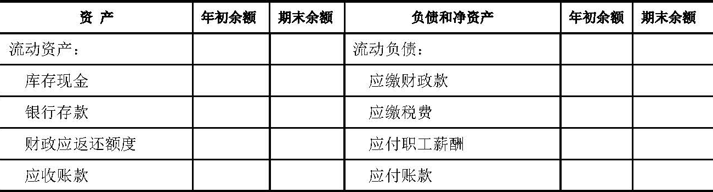

财政部
关于印发《行政单位会计制度》的通知
财库〔2013〕218号
党中央有关部门，国务院各部委、各直属机构，总后勤部，武警各部队，全国人大常委会办公厅，全国政协办公厅，高法院，高检院，有关人民团体，新疆生产建设兵团财务局，各省、自治区、直辖市、计划单列市财政厅（局）：
为了进一步规范行政单位的会计核算，提高会计信息质量，根据中华人民共和国会计法》和其他有关法律、行政法规、部门规章，我部对《行政单位会计制度》（财预字〔1998〕49号）进行了修订。现将修订后的《行政单位会计制度》印发给你们，自2014年1月1日起施行。执行中有何问题，请及时反馈我部。
附件：行政单位会计制度
财政部
2013年12月18日
行政单位会计制度
第一章 总则
第一条 为了规范行政单位会计核算，保证会计信息质量，根据《中华人民共和国会计法》和其他有关法律、行政法规和部门规章，制定本制度。
第二条 本制度适用于各级各类国家机关、政党组织（以下统称行政单位）。
第三条 行政单位会计核算目标是向会计信息使用者提供与行政单位财务状况、预算执行情况等有关的会计信息，反映行政单位受托责任的履行情况，有助于会计信息使用者进行管理、监督和决策。
行政单位会计信息使用者包括人民代表大会、政府及其有关部门、行政单位自身和其他会计信息使用者。
第四条 行政单位应当对其自身发生的经济业务或者事项进行会计核算。
第五条 行政单位会计核算应当以行政单位各项业务活动持续正常地进行为前提。
第六条 行政单位应当划分会计期间，分期结算账目和编制财务报表。
会计期间至少分为年度和月度。会计年度、月度等会计期间的起讫日期采用公历日期。
第七条 行政单位会计核算应当以人民币作为记账本位币。发生外币业务时，应当将有关外币金额折算为人民币金额计量。
第八条 行政单位会计应当按照业务或事项的经济特征确定会计要素。会计要素包括资产、负债、净资产、收入和支出。
第九条 行政单位会计核算一般采用收付实现制，特殊经济业务和事项应当按照本制度的规定采用权责发生制核算。
第十条 行政单位应当采用借贷记账法记账。
第十一条 行政单位的会计记录应当使用中文，少数民族地区可以同时使用本民族文字。
第二章 会计信息质量要求
第十二条 行政单位应当以实际发生的经济业务或者事项为依据进行会计核算，如实反映各项会计要素的情况和结果，保证会计信息真实可靠。
第十三条 行政单位提供的会计信息应当与行政单位受托责任履行情况的反映、会计信息使用者的管理、监督和决策需要相关，有助于会计信息使用者对行政单位过去、现在或者未来的情况作出评价或者预测。
第十四条 行政单位应当将发生的各项经济业务或者事项全部纳入会计核算，确保会计信息能够全面反映行政单位的财务状况和预算执行情况等。
第十五条 行政单位对于已经发生的经济业务或者事项，应当及时进行会计核算，不得提前或者延后。
第十六条 行政单位提供的会计信息应当具有可比性。
同一行政单位不同时期发生的相同或者相似的经济业务或者事项，应当采用一致的会计政策，不得随意变更。确需变更的，应当将变更的内容、理由和对单位财务状况、预算执行情况的影响在附注中予以说明。
不同行政单位发生的相同或者相似的经济业务或者事项，应当采用统一的会计政策，确保不同行政单位会计信息口径一致、相互可比。
第十七条 行政单位提供的会计信息应当清晰明了，便于会计信息使用者理解和使用。
第三章 资产
第十八条 资产是指行政单位占有或者使用的，能以货币计量的经济资源。
前款所称占有，是指行政单位对经济资源拥有法律上的占有权。由行政单位直接支配，供社会公众使用的政府储备物资、公共基础设施等，也属于行政单位核算的资产。
第十九条 行政单位的资产包括流动资产、固定资产、在建工程、无形资产等。其中，流动资产是指可以在1年以内（含1年）变现或者耗用的资产，包括库存现金、银行存款、零余额账户用款额度、财政应返还额度、应收及预付款项、存货等。
零余额账户用款额度是指实行国库集中支付的行政单位根据财政部门批复的用款计划收到和支用的零余额账户用款额度。
财政应返还额度是指实行国库集中支付的行政单位应收财政返还的资金额度。
应收及预付款项是指行政单位在开展业务活动中形成的各项债权，包括应收账款、预付账款、其他应收款等。
存货是指行政单位在工作中为耗用而储存的资产，包括材料、燃料、包装物和低值易耗品等。
固定资产是指使用期限超过1年（不含1年），单位价值在规定标准以上，并且在使用过程中基本保持原有物质形态的资产。
在建工程是指行政单位已经发生必要支出，但尚未交付使用的建设工程。
无形资产是指不具有实物形态而能够为使用者提供某种权利的非货币性资产。
第二十条 行政单位对符合本制度第十八条资产定义的经济资源，应当在取得对其相关的权利并且能够可靠地进行货币计量时确认。
符合资产定义并确认的资产项目，应当列入资产负债表。
第二十一条 行政单位的资产应当按照取得时实际成本进行计量。除国家另有规定外，行政单位不得自行调整其账面价值。
应收及预付款项应当按照实际发生额计量。
以支付对价方式取得的资产，应当按照取得资产时支付的现金或者现金等价物的金额，以及所付出的非货币性资产的评估价值等金额计量。
取得资产时没有支付对价的，其计量金额应当按照有关凭据注明的金额加上相关税费、运输费等确定；没有相关凭据但依法经过资产评估的，其计量金额应当按照评估价值加上相关税费、运输费等确定；没有相关凭据也未经评估的，其计量金额比照同类或类似资产的市场价格加上相关税费、运输费等确定；没有相关凭据也未经评估，其同类或类似资产的市场价格无法可靠取得，所取得的资产应当按照名义金额（即人民币1元，下同）入账。
第二十二条 行政单位应当按照本制度的规定对无形资产进行摊销；对无形资产计提摊销的金额，应当根据无形资产原价和摊销年限确定。
行政单位对固定资产、公共基础设施是否计提折旧由财政部另行规定；按照规定对固定资产、公共基础设施计提折旧的，折旧金额应当根据固定资产、公共基础设施原价和折旧年限确定。
第四章 负债
第二十三条 负债是指行政单位所承担的能以货币计量，需要以资产等偿还的债务。
第二十四条 行政单位的负债按照流动性，分为流动负债和非流动负债。
流动负债是指预计在1年内（含1年）偿还的负债。
非流动负债是指流动负债以外的负债。
第二十五条 行政单位的流动负债包括应缴财政款、应缴税费、应付职工薪酬、应付及暂存款项、应付政府补贴款等。
应缴财政款是指行政单位按照规定取得的应当上缴财政的款项。
应缴税费是指行政单位按照国家税法等有关规定应当缴纳的各种税费。
应付职工薪酬是指行政单位按照有关规定应付的职工工资、津贴补贴等。
应付及暂存款项是指行政单位在开展业务活动中发生的各项债务，包括应付账款、其他应付款等。
应付政府补贴款是指负责发放政府补贴的行政单位，按照有关规定应付给政府补贴接受者的各种政府补贴款。
第二十六条 行政单位的非流动负债包括长期应付款。
长期应付款是指行政单位发生的偿还期限超过1年（不含1年）的应付款项。
第二十七条 行政单位对符合本制度第二十三条负债定义的债务，应当在确定承担偿债责任并且能够可靠地进行货币计量时确认。
符合负债定义并确认的负债项目，应当列入资产负债表；行政单位承担或有责任（偿债责任需要通过未来不确定事项的发生或不发生予以证实）的负债，不列入资产负债表，但应当在报表附注中披露。
第二十八条 行政单位的负债，应当按照承担的相关合同金额或实际发生额进行计量。
第五章 净资产
第二十九条 净资产是指行政单位资产扣除负债后的余额。
第三十条 行政单位的净资产包括财政拨款结转、财政拨款结余、其他资金结转结余、资产基金、待偿债净资产等。
财政拨款结转是指行政单位当年预算已执行但尚未完成，或因故未执行，下一年度需要按照原用途继续使用的财政拨款滚存资金。
财政拨款结余是指行政单位当年预算工作目标已完成，或因故终止，剩余的财政拨款滚存资金。
其他资金结转结余是指行政单位除财政拨款收支以外的各项收支相抵后剩余的滚存资金。
资产基金是指行政单位的非货币性资产在净资产中占用的金额。
待偿债净资产是指行政单位因发生应付账款和长期应付款而相应需在净资产中冲减的金额。
第六章 收入
第三十一条 收入是指行政单位依法取得的非偿还性资金。
第三十二条 行政单位的收入包括财政拨款收入和其他收入。
财政拨款收入是指行政单位从同级财政部门取得的财政预算资金。
其他收入是指行政单位依法取得的除财政拨款收入以外的各项收入。
第三十三条 行政单位的收入一般应当在收到款项时予以确认，并按照实际收到的金额进行计量。
第七章 支出
第三十四条 支出是指行政单位为保障机构正常运转和完成工作任务所发生的资金耗费和损失。
第三十五条 行政单位的支出包括经费支出和拨出经费。
经费支出是指行政单位自身开展业务活动使用各项资金发生的基本支出和项目支出。
拨出经费是指行政单位纳入单位预算管理、拨付给所属单位的非同级财政拨款资金。
第三十六条 行政单位的支出一般应当在支付款项时予以确认，并按照实际支付金额进行计量。
采用权责发生制确认的支出，应当在其发生时予以确认，并按照实际发生额进行计量。
第八章 会计科目
第三十七条 行政单位应当按照下列规定运用会计科目：
一、行政单位应当对有关法律、法规允许进行的经济活动，按照本制度的规定使用会计科目进行核算；行政单位不得以本制度规定的会计科目及使用说明作为进行有关法律、法规禁止的经济活动的依据。
二、行政单位对基本建设投资的会计核算在执行本制度的同时，还应当按照国家有关基本建设会计核算的规定单独建账、单独核算。
三、行政单位应当按照本制度的规定设置和使用会计科目，因没有相关业务不需要使用的总账科目可以不设；在不影响会计处理和编报财务报表的前提下，行政单位可以根据实际情况自行增设本制度规定以外的明细科目，或者自行减少、合并本制度规定的明细科目。
四、按照财政部规定对固定资产和公共基础设施计提折旧的，相关折旧的账务处理应当按照本制度规定执行；按照财政部规定不对固定资产和公共基础设施计提折旧的，不设置本制度规定的“累计折旧”科目，在进行账务处理时不考虑本制度其他科目说明中涉及的“累计折旧”科目。
五、本制度统一规定会计科目的编号，以便于填制会计凭证、登记账簿、查阅账目、实行会计信息化管理。行政单位不得随意打乱重编本制度规定的会计科目编号。
第三十八条 行政单位适用的会计科目如下：
第三十九条 行政单位会计科目使用说明如下：
一、资产类
1001 库存现金
一、本科目核算行政单位的库存现金。
二、行政单位应当严格按照国家有关现金管理的规定收支现金，并按照本制度规定核算现金的各项收支业务。
三、库存现金的主要账务处理如下：
（一）从银行等金融机构提取现金，按照实际提取的金额，借记本科目，贷记“银行存款”、“零余额账户用款额度”等科目；将现金存入银行等金融机构，借记“银行存款”，贷记本科目；将现金退回单位零余额账户，借记“零余额账户用款额度”科目，贷记本科目。
（二）因支付内部职工出差等原因所借的现金，借记“其他应收款”科目，贷记本科目；出差人员报销差旅费时，按照应报销的金额，借记有关科目，按照实际借出的现金金额，贷记“其他应收款”科目，按照其差额，借记或贷记本科目。
（三）因开展业务或其他事项收到现金，借记本科目，贷记有关科目；因购买服务、商品或者其他事项支出现金，借记有关科目，贷记本科目。
（四）收到受托代理的现金时，借记本科目，贷记“受托代理负债”科目；支付受托代理的现金时，借记“受托代理负债”科目，贷记本科目。
四、行政单位应当设置“现金日记账”，由出纳人员根据收付款凭证，按照业务发生顺序逐笔登记。每日终了，应当计算当日的现金收入合计数、现金支出合计数和结余数，并将结余数与实际库存数核对，做到账款相符。
每日终了结算现金收支，核对库存现金时发现有待查明原因的现金短缺或溢余，应通过“待处理财产损溢”科目核算。属于现金短缺，应当按照实际短缺的金额，借记“待处理财产损溢”科目，贷记本科目；属于现金溢余，应当按照实际溢余的金额，借记本科目，贷记“待处理财产损溢”科目。待查明原因后作如下处理：
（一）如为现金短缺，属于应由责任人赔偿或向有关人员追回的部分，借记“其他应收款”科目，贷记“待处理财产损溢”科目。
（二）如为现金溢余，属于应支付给有关人员或单位的，借记“待处理财产损溢”科目，贷记“其他应付款”科目。
五、行政单位有外币现金的，应当分别按照人民币、外币种类设置“现金日记账”进行明细核算。有关外币现金业务的账务处理参见“银行存款”科目的相关规定。
六、本科目期末借方余额，反映行政单位实际持有的库存现金。
1002 银行存款
一、本科目核算行政单位存入银行或者其他金融机构的各种存款。
二、行政单位应当严格按照国家有关支付结算办法的规定办理银行存款收支业务，并按照本制度规定核算银行存款的各项收支业务。
三、银行存款的主要账务处理如下：
（一）将款项存入银行或者其他金融机构，借记本科目，贷记“库存现金”、“其他收入”等有关科目。
（二）提取和支出存款时，借记有关科目，贷记本科目。
（三）收到银行存款利息，借记本科目，贷记“其他收入”等科目；支付银行手续费或银行扣收罚金等时，借记“经费支出”科目，贷记本科目。
（四）收到受托代理的银行存款时，借记本科目，贷记“受托代理负债”科目；支付受托代理的存款时，借记“受托代理负债”科目，贷记本科目。
四、行政单位发生外币业务的，应当按照业务发生当日或当期期初的即期汇率，将外币金额折算为人民币金额记账，并登记外币金额和汇率。
期末，各种外币账户的期末余额，应当按照期末的即期汇率折算为人民币，作为外币账户期末人民币余额。调整后的各种外币账户人民币余额与原账面余额的差额，作为汇兑损溢计入当期支出。
（一）以外币购买物资、劳务等，按照购入当日或当期期初的即期汇率将支付的外币或应支付的外币折算为人民币金额，借记有关科目，贷记本科目、“应付账款”等科目的外币账户。
（二）以外币收取相关款项等，按照收入确认当日或当期期初的即期汇率将收取的外币或应收取的外币折算为人民币金额，借记本科目、“应收账款”等科目的外币账户，贷记有关科目。
（三）期末，根据各外币账户按期末汇率调整后的人民币余额与原账面人民币余额的差额，作为汇兑损溢，借记或贷记本科目、“应收账款”、“应付账款”等科目，贷记或借记“经费支出”等科目。
五、行政单位应当按开户银行或其他金融机构、存款种类及币种等，分别设置“银行存款日记账”，由出纳人员根据收付款凭证，按照业务的发生顺序逐笔登记，每日终了应结出余额。“银行存款日记账”应定期与“银行对账单”核对，至少每月核对一次。月度终了，行政单位账面余额与银行对账单余额之间如有差额，必须逐笔查明原因并进行处理，按月编制“银行存款余额调节表”，调节相符。
六、本科目期末借方余额，反映行政单位实际存放在银行或其他金融机构的款项。
1011 零余额账户用款额度
一、本科目核算实行国库集中支付的行政单位根据财政部门批复的用款计划收到和支用的零余额账户用款额度。
二、零余额账户用款额度的主要账务处理如下：
（一）收到“财政授权支付额度到账通知书”时，根据通知书所列数额，借记本科目，贷记“财政拨款收入”科目。
（二）按规定支用额度时，借记“经费支出”等科目，贷记本科目。
（三）从零余额账户提取现金时，借记“库存现金”科目，贷记本科目。
（四）年末，根据代理银行提供的对账单作银行注销额度的相关账务处理，借记“财政应返还额度——财政授权支付”科目，贷记本科目。如单位本年度财政授权支付预算指标数大于财政授权支付额度下达数，根据两者间的差额，借记“财政应返还额度——财政授权支付”科目，贷记“财政拨款收入”科目。
下年度年初，行政单位根据代理银行提供的额度恢复到账通知书作恢复额度的相关账务处理，借记本科目，贷记“财政应返还额度——财政授权支付”科目。行政单位收到财政部门批复的上年未下达零余额账户用款额度时，借记本科目，贷记“财政应返还额度——财政授权支付”科目。
三、本科目期末借方余额，反映行政单位尚未支用的零余额账户用款额度。年度终了注销单位零余额账户用款额度后，本科目应无余额。
1021 财政应返还额度
一、本科目核算实行国库集中支付的行政单位应收财政返还的资金额度。
二、本科目应当设置“财政直接支付”、“财政授权支付”两个明细科目进行明细核算。
三、财政应返还额度的主要账务处理如下：
（一）年末国库集中支付尚未使用资金额度的账务处理。
1.财政直接支付。
年末，行政单位根据本年度财政直接支付预算指标数与财政直接支付实际支出数的差额，借记本科目（财政直接支付），贷记“财政拨款收入”科目。
2.财政授权支付。
年末，财政授权支付尚未使用资金额度的账务处理，参见“零余额账户用款额度”科目。
（二）下年初恢复以前年度财政资金额度的账务处理，参见“零余额账户用款额度”科目。
（三）行政单位使用以前年度财政资金额度的账务处理。
1.财政直接支付。
行政单位使用以前年度财政直接支付额度发生支出时，借记“经费支出”科目，贷记本科目（财政直接支付）。
2.财政授权支付。
行政单位使用以前年度财政授权支付额度发生支出时的账务处理，参见“零余额账户用款额度”科目。
四、本科目期末借方余额，反映行政单位应收财政返还的资金额度。
1212 应收账款
一、本科目核算行政单位出租资产、出售物资等应当收取的款项。行政单位收到的商业汇票，也通过本科目核算。
二、本科目应当按照购货、接受服务单位（或个人）或开出、承兑商业汇票的单位等进行明细核算。
三、应收账款应当在资产已出租或物资已出售、且尚未收到款项时确认。
四、应收账款的主要账务处理如下：
（一）出租资产发生的应收账款。
1.出租资产尚未收到款项时，按照应收未收金额，借记本科目，贷记“其他应付款”科目。
2.收回应收账款时，借记“银行存款”等科目，贷记本科目；同时，借记“其他应付款”科目，按照应缴的税费，贷记“应缴税费”科目，按照扣除应缴税费后的净额，贷记“应缴财政款”科目。
（二）出售物资发生的应收账款。
1.物资已发出并到达约定状态且尚未收到款项时，按照应收未收金额，借记本科目，贷记“待处理财产损溢”科目。
2.收回应收账款时，借记“银行存款”等科目，贷记本科目。
（三）收到商业汇票。
1.出租资产收到商业汇票，按照商业汇票的票面金额，借记本科目，贷记“其他应付款”科目。
出售物资收到商业汇票，按照商业汇票的票面金额，借记本科目，贷记“待处理财产损溢”科目。
2.商业汇票到期收回款项时，借记“银行存款”等科目，贷记本科目。其中，出租资产收回款项的，还应当同时借记“其他应付款”科目，按照应缴的税费，贷记“应缴税费”科目，按照扣除应缴税费后的净额，贷记“应缴财政款”科目。
行政单位应当设置“商业汇票备查簿”，逐笔登记每一笔应收商业汇票的种类、号数、出票日期、到期日、票面金额、交易合同号等相关信息资料。商业汇票到期结清票款或退票后，应当在备查簿内逐笔注销。
五、逾期3年或以上、有确凿证据表明确实无法收回的应收账款，按规定报经批准后予以核销。核销的应收账款应在备查簿中保留登记。
（一）转入待处理财产损溢时，按照待核销的应收账款金额，借记“待处理财产损溢”科目，贷记本科目。
（二）已核销的应收账款在以后期间收回的，借记“银行存款”科目，贷记“应缴财政款”等科目。
六、本科目期末借方余额，反映行政单位尚未收回的应收账款。
1213 预付账款
一、本科目核算行政单位按照购货、服务合同规定预付给供应单位（或个人）的款项。行政单位依据合同规定支付的定金，也通过本科目核算。行政单位支付可以收回的订金，不通过本科目核算，应当通过“其他应收款”科目核算。
二、本科目应当按照供应单位（或个人）进行明细核算。
三、预付账款应当在已支付款项且尚未收到物资或服务时确认。
四、预付账款的主要账务处理如下：
（一）发生预付账款时，借记本科目，贷记“资产基金——预付款项”科目；同时，借记“经费支出”科目，贷记“财政拨款收入”、“零余额账户用款额度”、“银行存款”等科目。
（二）收到所购物资或服务时，按照相应预付账款金额，借记“资产基金——预付款项”科目，贷记本科目；发生补付款项的，按照实际补付的款项，借记“经费支出”科目，贷记“财政拨款收入”、“零余额账户用款额度”、“银行存款”等科目。收到物资的，同时按照收到所购物资的成本，借记有关资产科目，贷记“资产基金”及相关明细科目。
（三）发生当年预付账款退回的，借记“资产基金——预付款项”科目，贷记本科目；同时，借记“财政拨款收入”、“零余额账户用款额度”、“银行存款”等科目，贷记“经费支出”科目。
发生以前年度预付账款退回的，借记“资产基金——预付款项”科目，贷记本科目；同时，借记“财政应返还额度”、“零余额账户用款额度”、“银行存款”等科目，贷记“财政拨款结转”、“财政拨款结余”、“其他资金结转结余”等科目。
五、逾期3年或以上、有确凿证据表明确实无法收到所购物资和服务，且无法收回的预付账款，按照规定报经批准后予以核销。核销的预付账款应在备查簿中保留登记。
（一）转入待处理财产损溢时，按照待核销的预付账款金额，借记“待处理财产损溢”科目，贷记本科目。
（二）已核销的预付账款在以后期间又收回的，借记“零余额账户用款额度”、“银行存款”等科目，贷记“财政拨款结转”、“财政拨款结余”、“其他资金结转结余”等科目。
六、本科目期末借方余额，反映行政单位实际预付但尚未结算的款项。
1215 其他应收款
一、本科目核算行政单位除应收账款、预付账款以外的其他各项应收及暂付款项，如职工预借的差旅费、拨付给内部有关部门的备用金、应向职工收取的各种垫付款项等。
二、本科目应当按照其他应收款的类别以及债务单位（或个人）进行明细核算。
三、其他应收款的主要账务处理如下：
（一）发生其他应收及暂付款项时，借记本科目，贷记“零余额账户用款额度”、“银行存款”等科目。
（二）收回或转销上述款项时，借记“银行存款”、“零余额账户用款额度”或有关支出等科目，贷记本科目。
（三）行政单位内部实行备用金制度的，有关部门使用备用金以后应当及时到财务部门报销并补足备用金。财务部门核定并发放备用金时，借记本科目，贷记“库存现金”等科目。根据报销数用现金补足备用金定额时，借记“经费支出”科目，贷记“库存现金”等科目，报销数和拨补数都不再通过本科目核算。
四、逾期3年或以上、有确凿证据表明确实无法收回的其他应收款，按规定报经批准后予以核销。核销的其他应收款应在备查簿中保留登记。
（一）转入待处理财产损溢时，按照待核销的其他应收款金额，借记“待处理财产损溢”科目，贷记本科目。
（二）已核销的其他应收款在以后期间又收回的，如属于在核销年度内收回的，借记“银行存款”等科目，贷记“经费支出”科目；如属于在核销年度以后收回的，借记“银行存款”等科目，贷记“财政拨款结转”、“财政拨款结余”、“其他资金结转结余”等科目。
五、本科目期末借方余额，反映行政单位尚未收回的其他应收款。
1301 存货
一、本科目核算行政单位在开展业务活动及其他活动中为耗用而储存的各种物资，包括材料、燃料、包装物和低值易耗品及未达到固定资产标准的家具、用具、装具等的实际成本。
行政单位接受委托人指定受赠人的转赠物资，应当通过“受托代理资产”科目核算，不通过本科目核算。
行政单位随买随用的零星办公用品等，可以在购进时直接列作支出，不通过本科目核算。
二、本科目应当按照存货的种类、规格和保管地点等进行明细核算。行政单位有委托加工存货业务的，应当在本科目下设置“委托加工存货成本”科目。出租、出借的存货，应当设置备查簿进行登记。
三、存货应当在其到达存放地点并验收时确认。
四、存货的主要账务处理如下：
（一）存货在取得时，应当按照其实际成本入账。
1.购入的存货，其成本包括购买价款、相关税费、运输费、装卸费、保险费以及其他使得存货达到目前场所和状态所发生的支出。
购入的存货验收入库，按照确定的成本，借记本科目，贷记“资产基金——存货”科目；同时，按照实际支付的金额，借记“经费支出”科目，贷记“财政拨款收入”、“零余额账户用款额度”、“银行存款”等科目；对于尚未付款的，应当按照应付未付的金额，借记“待偿债净资产”科目，贷记“应付账款”科目。
2.置换换入的存货，其成本按照换出资产的评估价值，加上支付的补价或减去收到的补价，加上为换入存货支付的其他费用（运输费等）确定。
换入的存货验收入库，按照确定的成本，借记本科目，贷记“资产基金——存货”科目；同时，按实际支付的补价、运输费等金额，借记“经费支出”科目，贷记“财政拨款收入”、“零余额账户用款额度”、“银行存款”等科目。
3.接受捐赠、无偿调入的存货，其成本按照有关凭据注明的金额加上相关税费、运输费等确定；没有相关凭据可供取得，但依法经过资产评估的，其成本应当按照评估价值加上相关税费、运输费等确定；没有相关凭据可供取得、也未经评估的，其成本比照同类或类似存货的市场价格加上相关税费、运输费等确定；没有相关凭据也未经评估，其同类或类似存货的市场价格无法可靠取得，该存货按照名义金额入账。
接受捐赠、无偿调入的存货验收入库，按照确定的成本，借记本科目，贷记“资产基金——存货”科目；同时，按实际支付的相关税费、运输费等金额，借记“经费支出”科目，贷记“财政拨款收入”、“零余额账户用款额度”、“银行存款”等科目。
4.委托加工的存货，其成本按照未加工存货的成本加上加工费用和往返运输费等确定。
委托加工的存货出库，借记本科目下的“委托加工存货成本”明细科目，贷记本科目下的相关明细科目。支付加工费用和相关运输费等时，借记“经费支出”科目，贷记“财政拨款收入”、“零余额账户用款额度”、“银行存款”等科目；同时，按照相同的金额，借记本科目下的“委托加工存货成本”明细科目，贷记“资产基金——存货”科目。委托加工完成的存货验收入库时，按照委托加工存货的成本，借记本科目下的相关明细科目，贷记本科目下的“委托加工存货成本”明细科目。
（二）存货发出时，应当根据实际情况采用先进先出法、加权平均法或者个别计价法确定发出存货的实际成本。计价方法一经确定，不得随意变更。
1.开展业务活动等领用、发出存货，按照领用、发出存货的实际成本，借记“资产基金——存货”科目，贷记本科目。
2.经批准对外捐赠、无偿调出存货时，按照对外捐赠、无偿调出存货的实际成本，借记“资产基金——存货”科目，贷记本科目。
对外捐赠、无偿调出存货发生由行政单位承担的运输费等支出，借记“经费支出”科目，贷记“财政拨款收入”、“零余额账户用款额度”、“银行存款”等科目。
3.经批准对外出售、置换换出的存货，应当转入待处理财产损溢，按照相关存货的实际成本，借记“待处理财产损溢”科目，贷记本科目。
（三）报废、毁损的存货，应当转入待处理财产损溢，按照相关存货的账面余额，借记“待处理财产损溢”科目，贷记本科目。
（四）行政单位的存货应当定期进行清查盘点，每年至少盘点一次。对于发生的存货盘盈、盘亏，应当及时查明原因，按规定报经批准后进行账务处理。
1.盘盈的存货，按照取得同类或类似存货的实际成本确定入账价值；没有同类或类似存货的实际成本，按照同类或类似存货的市场价格确定入账价值；同类或类似存货的实际成本或市场价格无法可靠取得，按照名义金额入账。
盘盈的存货，按照确定的入账价值，借记本科目，贷记“待处理财产损溢”科目。
2.盘亏的存货，转入待处理财产损溢时，按照其账面余额，借记“待处理财产损溢”科目，贷记本科目。
五、本科目期末借方余额，反映行政单位存货的实际成本。
1501 固定资产
一、本科目核算行政单位各类固定资产的原价。
固定资产是指使用期限超过1年（不含1年）、单位价值在规定标准以上，并在使用过程中基本保持原有物质形态的资产。单位价值虽未达到规定标准，但是耐用时间超过1年（不含1年）的大批同类物资，应当作为固定资产核算。
固定资产一般分为六类：房屋及构筑物；通用设备；专用设备；文物和陈列品；图书、档案；家具、用具、装具及动植物。
二、固定资产核算的有关说明如下：
（一）固定资产的各组成部分具有不同的使用寿命、适用不同折旧率的，应当分别将各组成部分确认为单项固定资产。
（二）购入需要安装的固定资产，应当先通过“在建工程”科目核算，安装完毕交付使用时再转入本科目核算。
（三）行政单位的软件，如果其构成相关硬件不可缺少的组成部分，应当将该软件的价值包括在所属的硬件价值中，一并作为固定资产，通过本科目进行核算；如果其不构成相关硬件不可缺少的组成部分，应当将该软件作为无形资产，通过“无形资产”科目核算。
（四）行政单位购建房屋及构筑物不能够分清支付价款中的房屋及构筑物与土地使用权部分的，应当全部作为固定资产，通过本科目核算；能够分清支付价款中的房屋及构筑物与土地使用权部分的，应当将其中的房屋及构筑物部分作为固定资产，通过本科目核算，将其中的土地使用权部分作为无形资产，通过“无形资产”科目核算；境外行政单位购买具有所有权的土地，作为固定资产，通过本科目核算。
（五）行政单位借入、以经营租赁方式租入的固定资产，不通过本科目核算，应当设置备查簿进行登记。
三、行政单位应当根据固定资产定义、有关主管部门对固定资产的统一分类，结合本单位的具体情况，制定适合本单位的固定资产目录、具体分类方法，作为进行固定资产核算的依据。
行政单位应当设置“固定资产登记簿”和“固定资产卡片”，按照固定资产类别、项目和使用部门等进行明细核算。出租、出借的固定资产，应当设置备查簿进行登记。
四、本科目核算的固定资产应当按照以下条件确认：
（一）购入、换入、无偿调入、接受捐赠不需安装的固定资产，在固定资产验收合格时确认。
（二）购入、换入、无偿调入、接受捐赠需要安装的固定资产，在固定资产安装完成交付使用时确认。
（三）自行建造、改建、扩建的固定资产，在建造完成交付使用时确认。
五、固定资产的主要账务处理如下：
（一）取得固定资产时，应当按照其成本入账。
1.购入的固定资产，其成本包括实际支付的购买价款、相关税费、使固定资产交付使用前所发生的可归属于该项资产的运输费、装卸费、安装费和专业人员服务费等。
以一笔款项购入多项没有单独标价的固定资产，按照各项固定资产同类或类似固定资产市场价格的比例对总成本进行分配，分别确定各项固定资产的入账价值。
购入不需安装的固定资产，按照确定的固定资产成本，借记本科目，贷记“资产基金——固定资产”科目；同时，按照实际支付的金额，借记“经费支出”科目，贷记“财政拨款收入”、“零余额账户用款额度”、“银行存款”等科目。
购入需要安装的固定资产，先通过“在建工程”科目核算。安装完工交付使用时，借记本科目，贷记“资产基金——固定资产”科目；同时，借记“资产基金——在建工程”科目，贷记“在建工程”科目。
购入固定资产分期付款或扣留质量保证金的，在取得固定资产时，按照确定的固定资产成本，借记本科目[不需安装]或“在建工程”科目[需要安装]，贷记“资产基金——固定资产、在建工程”科目；同时，按照已实际支付的价款，借记“经费支出”科目，贷记“财政拨款收入”、“零余额账户用款额度”、“银行存款”等科目；按照应付未付的款项或扣留的质量保证金等金额，借记“待偿债净资产”科目，贷记“应付账款”或“长期应付款”科目。
2.自行建造的固定资产，其成本包括建造该项资产至交付使用前所发生的全部必要支出。
固定资产的各组成部分需要分别核算的，按照各组成部分固定资产造价确定其成本；没有各组成部分固定资产造价的，按照各组成部分固定资产同类或类似固定资产市场造价的比例对总造价进行分配，确定各组成部分固定资产的成本。
工程完工交付使用时，按照自行建造过程中发生的实际支出，借记本科目，贷记“资产基金——固定资产”科目；同时，借记“资产基金——在建工程”科目，贷记“在建工程”科目；已交付使用但尚未办理竣工决算手续的固定资产，按照估计价值入账，待确定实际成本后再进行调整。
3.自行繁育的动植物，其成本包括在达到可使用状态前所发生的全部必要支出。
（1）购入需要繁育的动植物，按照购入的成本，借记本科目（未成熟动植物），贷记“资产基金——固定资产”科目；同时，按照实际支付的金额，借记“经费支出”科目，贷记“财政拨款收入”、“零余额账户用款额度”、“银行存款”等科目。
（2）发生繁育费用，按照实际支付的金额，借记本科目（未成熟动植物），贷记“资产基金——固定资产”科目；同时，借记“经费支出”科目，贷记“财政拨款收入”、“零余额账户用款额度”、“银行存款”等科目。
（3）动植物达到可使用状态时，借记本科目（成熟动植物），贷记本科目（未成熟动植物）。
4.在原有固定资产基础上进行改建、扩建、修缮的固定资产，其成本按照原固定资产的账面价值（“固定资产”科目账面余额减去“累计折旧”科目账面余额后的净值）加上改建、扩建、修缮发生的支出，再扣除固定资产拆除部分账面价值后的金额确定。
将固定资产转入改建、扩建、修缮时，按照固定资产的账面价值，借记“在建工程”科目，贷记“资产基金——在建工程”科目；同时，按照固定资产的账面价值，借记“资产基金——固定资产”科目，按照固定资产已计提折旧，借记“累计折旧”科目，按照固定资产的账面余额，贷记本科目。
工程完工交付使用时，按照确定的固定资产成本，借记本科目，贷记“资产基金——固定资产”科目；同时，借记“资产基金——在建工程”科目，贷记“在建工程”科目。
5.置换取得的固定资产，其成本按照换出资产的评估价值加上支付的补价或减去收到的补价，加上为换入固定资产支付的其他费用（运输费等）确定，借记本科目[不需安装]或“在建工程”科目[需安装]，贷记“资产基金——固定资产、在建工程”科目；按照实际支付的补价、相关税费、运输费等，借记“经费支出”科目，贷记“财政拨款收入”、“零余额账户用款额度”、“银行存款”等科目。
6.接受捐赠、无偿调入的固定资产，其成本按照有关凭据注明的金额加上相关税费、运输费等确定；没有相关凭据可供取得，但依法经过资产评估的，其成本应当按照评估价值加上相关税费、运输费等确定；没有相关凭据可供取得、也未经评估的，其成本比照同类或类似固定资产的市场价格加上相关税费、运输费等确定；没有相关凭据也未经评估，其同类或类似固定资产的市场价格无法可靠取得，所取得的固定资产应当按照名义金额入账。
接受捐赠、无偿调入的固定资产，按照确定的成本，借记本科目[不需安装]或“在建工程”科目[需要安装]，贷记“资产基金——固定资产、在建工程”科目；按照实际支付的相关税费、运输费等，借记“经费支出”科目，贷记“财政拨款收入”、“零余额账户用款额度”、“银行存款”等科目。
（二）按月计提固定资产折旧时，按照实际计提的金额，借记“资产基金——固定资产”科目，贷记“累计折旧”科目。
（三）与固定资产有关的后续支出，分以下情况处理：
1.为增加固定资产使用效能或延长其使用寿命而发生的改建、扩建或修缮等后续支出，应当计入固定资产成本，通过“在建工程”科目核算，完工交付使用时转入本科目。有关账务处理参见“在建工程”科目。
2.为维护固定资产正常使用而发生的日常修理等后续支出，应当计入当期支出但不计入固定资产成本，借记“经费支出”科目，贷记“财政拨款收入”、“零余额账户用款额度”、“银行存款”等科目。
（四）出售、置换换出固定资产。
经批准出售、置换换出的固定资产转入待处理财产损溢时，按照固定资产的账面价值，借记“待处理财产损溢”科目，按照已计提折旧，借记“累计折旧”科目，按照固定资产的账面余额，贷记本科目。
（五）无偿调出、对外捐赠固定资产。
经批准无偿调出、对外捐赠固定资产时，按照固定资产的账面价值，借记“资产基金——固定资产”科目，按照已计提折旧，借记“累计折旧”科目，按照固定资产的账面余额，贷记本科目。
无偿调出、对外捐赠固定资产发生由行政单位承担的拆除费用、运输费等，按照实际支付的金额，借记“经费支出”科目，贷记“财政拨款收入”、“零余额账户用款额度”、“银行存款”等科目。
（六）报废、毁损固定资产。
报废、毁损的固定资产转入待处理财产损溢时，按照固定资产的账面价值，借记“待处理财产损溢”科目，按照已计提折旧，借记“累计折旧”科目，按照固定资产的账面余额，贷记本科目。
（七）盘盈、盘亏固定资产。
行政单位的固定资产应当定期进行清查盘点，每年至少盘点一次。对于固定资产发生盘盈、盘亏的，应当及时查明原因，按照规定报经批准后进行账务处理。
1.盘盈的固定资产，按照取得同类或类似固定资产的实际成本确定入账价值；没有同类或类似固定资产的实际成本，按照同类或类似固定资产的市场价格确定入账价值；同类或类似固定资产的实际成本或市场价格无法可靠取得，按照名义金额入账。
盘盈的固定资产，按照确定的入账价值，借记本科目，贷记“待处理财产损溢”科目。
2.盘亏的固定资产，按照盘亏固定资产的账面价值，借记“待处理财产损溢”科目，按照已计提折旧，借记“累计折旧”科目，按照固定资产账面余额，贷记本科目。
六、本科目期末借方余额，反映行政单位固定资产的原价。
1502 累计折旧
一、本科目核算行政单位固定资产、公共基础设施计提的累计折旧。
二、本科目应当按照固定资产、公共基础设施的类别、项目等进行明细核算。占有公共基础设施的行政单位，应当在本科目下设置“固定资产累计折旧”和“公共基础设施累计折旧”两个一级明细科目，分别核算对固定资产和公共基础设施计提的折旧。
三、行政单位对下列固定资产不计提折旧：
（一）文物及陈列品；
（二）图书、档案；
（三）动植物；
（四）以名义金额入账的固定资产；
（五）境外行政单位持有的能够与房屋及构筑物区分、拥有所有权的土地。
四、固定资产、公共基础设施计提折旧是指在固定资产、公共基础设施预计使用寿命内，按照确定的方法对应折旧金额进行系统分摊。有关说明如下：
（一）行政单位应当根据固定资产、公共基础设施的性质和实际使用情况，合理确定其折旧年限。省级以上财政部门、主管部门对行政单位固定资产、公共基础设施折旧年限作出规定的，从其规定。
（二）行政单位一般应当采用年限平均法或工作量法计提固定资产、公共基础设施折旧。
（三）行政单位固定资产、公共基础设施的应折旧金额为其成本，计提固定资产、公共基础设施折旧不考虑预计净残值。
（四）行政单位一般应当按月计提固定资产、公共基础设施折旧。当月增加的固定资产、公共基础设施，当月不提折旧，从下月起计提折旧；当月减少的固定资产、公共基础设施，当月照提折旧，从下月起不提折旧。
（五）固定资产、公共基础设施提足折旧后，无论能否继续使用，均不再计提折旧；提前报废的固定资产、公共基础设施，也不再补提折旧；已提足折旧的固定资产、公共基础设施，可以继续使用的，应当继续使用，规范管理。
（六）固定资产、公共基础设施因改建、扩建或修缮等原因而提高使用效能或延长使用年限的，应当按照重新确定的固定资产、公共基础设施成本以及重新确定的折旧年限，重新计算折旧额。
五、累计折旧的主要账务处理如下：
（一）按月计提固定资产、公共基础设施折旧时，按照应计提折旧金额，借记“资产基金——固定资产、公共基础设施”科目，贷记本科目。
（二）固定资产、公共基础设施处置时，按照所处置固定资产、公共基础设施的账面价值，借记“待处理财产损溢”科目[出售、置换换出、报废、毁损、盘亏]或“资产基金——固定资产、公共基础设施”科目[无偿调出、对外捐赠]，按照固定资产、公共基础设施已计提折旧，借记本科目，按照固定资产、公共基础设施的账面余额，贷记“固定资产”、“公共基础设施”科目。
六、本科目期末贷方余额，反映行政单位计提的固定资产、公共基础设施折旧累计数。
1511 在建工程
一、本科目核算行政单位已经发生必要支出，但尚未完工交付使用的各种建筑（包括新建、改建、扩建、修缮等）、设备安装工程和信息系统建设工程的实际成本。不能够增加固定资产、公共基础设施使用效能或延长其使用寿命的修缮、维护等，不通过本科目核算。
二、本科目应当按照具体工程项目等进行明细核算；需要分摊计入不同工程项目的间接工程成本，应当通过本科目下设置的“待摊投资”明细科目核算。
三、行政单位的基本建设投资应当按照国家有关规定单独建账、单独核算，同时按照本制度的规定至少按月并入本科目及其他相关科目反映。
行政单位应当在本科目下设置“基建工程”明细科目，核算由基建账套并入的在建工程成本。有关基建并账的具体账务处理另行规定。
四、在建工程应当在属于在建工程的成本发生时确认。
五、在建工程（非基本建设项目）的主要账务处理如下：
（一）建筑工程。
1.将固定资产转入改建、扩建或修缮等时，按照固定资产的账面价值，借记本科目，贷记“资产基金——在建工程”科目；同时，按照固定资产的账面价值，借记“资产基金——固定资产”科目，按照固定资产已计提折旧，借记“累计折旧”科目，按照固定资产的账面余额，贷记“固定资产”科目。
2.将改建、扩建或修缮的建筑部分拆除时，按照拆除部分的账面价值[没有固定资产拆除部分的账面价值的，比照同类或类似固定资产的实际成本或市场价格及其拆除部分占全部固定资产价值的比例确定]，借记“资产基金——在建工程”科目，贷记本科目。
改建、扩建或修缮的建筑部分拆除获得残值收入时，借记“银行存款”等科目，贷记“经费支出”科目；同时，借记“资产基金——在建工程”科目，贷记本科目。
3.根据工程进度支付工程款时，按照实际支付的金额，借记“经费支出”科目，贷记“财政拨款收入”、“零余额账户用款额度”、“银行存款”等科目；同时按照相同的金额，借记本科目，贷记“资产基金——在建工程”科目。
根据工程价款结算账单与施工企业结算工程价款时，按照工程价款结算账单上列明的金额（扣除已支付的金额），借记本科目，贷记“资产基金——在建工程”科目；同时，按照实际支付的金额，借记“经费支出”科目，贷记“财政拨款收入”、“零余额账户用款额度”、“银行存款”等科目，按照应付未付的金额，借记“待偿债净资产”科目，贷记“应付账款”科目。
4.支付工程价款结算账单以外的款项时，借记本科目，贷记“资产基金——在建工程”科目；同时，借记“经费支出”科目，贷记“财政拨款收入”、“零余额账户用款额度”、“银行存款”等科目。
5.
工程项目结束，需要分摊间接工程成本的，按照应当分摊到该项目的间接工程成本，借记本科目（××项目），贷记本科目（待摊投资）。
6.建筑工程项目完工交付使用时，按照交付使用工程的实际成本，借记“资产基金——在建工程”科目，贷记本科目；同时，借记“固定资产”、“无形资产”科目（交付使用的工程项目中有能够单独区分成本的无形资产），贷记“资产基金——固定资产、无形资产”科目。
7.建筑工程项目完工交付使用时扣留质量保证金的，按照扣留的质量保证金金额，借记“待偿债净资产”科目，贷记“长期应付款”等科目。
8.为工程项目配套而建成的、产权不归属本单位的专用设施，将专用设施产权移交其他单位时，按照应当交付专用设施的实际成本，借记“资产基金——在建工程”科目，贷记本科目。
9.工程完工但不能形成资产的项目，应当按照规定报经批准后予以核销。转入待处理财产损溢时，按照不能形成资产的工程项目的实际成本，借记“待处理财产损溢”科目，贷记本科目。
（二）设备安装。
1.购入需要安装的设备，按照购入的成本，借记本科目，贷记“资产基金——在建工程”科目；同时，按照实际支付的金额，借记“经费支出”科目，贷记“财政拨款收入”、“零余额账户用款额度”、“银行存款”等科目。
2.发生安装费用时，按照实际支付的金额，借记本科目，贷记“资产基金——在建工程”科目；同时，借记“经费支出”科目，贷记“财政拨款收入”、“零余额账户用款额度”、“银行存款”等科目。
3.设备安装完工交付使用时，按照交付使用设备的实际成本，借记“资产基金——在建工程”科目，贷记本科目；同时，借记“固定资产”、“无形资产”科目（交付使用的设备中有能够单独区分成本的无形资产），贷记“资产基金——固定资产、无形资产”科目。
（三）信息系统建设。
1.发生各项建设支出时，按照实际支付的金额，借记本科目，贷记“资产基金——在建工程”科目；同时，借记“经费支出”科目，贷记“财政拨款收入”、“零余额账户用款额度”、“银行存款”等科目。
2.信息系统建设完成交付使用时，按照交付使用信息系统的实际成本，借记“资产基金——在建工程”科目，贷记本科目；同时，借记“固定资产”、“无形资产”科目，贷记“资产基金——固定资产、无形资产”科目。
（四）在建工程的毁损。
毁损的在建工程成本，应当转入“待处理财产损溢”科目进行处理。转入待处理财产损溢时，借记“待处理财产损溢”科目，贷记本科目。
六、本科目期末借方余额，反映行政单位尚未完工的在建工程的实际成本。
1601 无形资产
一、本科目核算行政单位各项无形资产的原价。
本科目核算的无形资产是指不具有实物形态而能为行政单位提供某种权利的非货币性资产，包括著作权、土地使用权、专利权、非专利技术等。
行政单位购入的不构成相关硬件不可缺少组成部分的软件，应当作为无形资产核算。
二、本科目应当按照无形资产的类别、项目等进行明细核算。
三、无形资产应当在完成对其权属的规定登记或其他证明单位取得无形资产时确认。
四、无形资产的主要账务处理如下：
（一）取得无形资产时，应当按照其实际成本入账。
1.外购的无形资产，其成本包括实际支付的购买价款、相关税费以及可归属于该项资产达到预定用途所发生的其他支出。
购入的无形资产，按照确定的成本，借记本科目，贷记“资产基金——无形资产”科目；同时，按照实际支付的金额，借记“经费支出”科目，贷记“财政拨款收入”、“零余额账户用款额度”、“银行存款”等科目。
购入无形资产尚未付款的，取得无形资产时，按照确定的成本，借记本科目，贷记“资产基金——无形资产”科目；同时，按照应付未付的款项金额，借记“待偿债净资产”科目，贷记“应付账款”科目。
2.委托软件公司开发软件，视同外购无形资产进行处理。
（1）软件开发前按照合同约定预付开发费用时，借记“预付账款”科目，贷记“资产基金——预付款项”科目；同时，借记“经费支出”科目，贷记“财政拨款收入”、“零余额账户用款额度”、“银行存款”等科目。
（2）软件开发完成交付使用，并支付剩余或全部软件开发费用时，按照软件开发费用总额，借记本科目，贷记“资产基金——无形资产”科目；按照实际支付的金额，借记“经费支出”科目，贷记“财政拨款收入”、“零余额账户用款额度”、“银行存款”等科目；按照冲销的预付开发费用，借记“资产基金——预付款项”科目，贷记“预付账款”科目。
3.自行开发并按法律程序申请取得的无形资产，按照依法取得时发生的注册费、聘请律师费等费用确定成本。
取得无形资产时，按照确定的成本，借记本科目，贷记“资产基金——无形资产”科目；同时，按照实际支付的金额，借记“经费支出”科目，贷记“财政拨款收入”、“零余额账户用款额度”、“银行存款”等科目。
依法取得前所发生的研究开发支出，应当于发生时直接计入当期支出，但不计入无形资产的成本。借记“经费支出”科目，贷记“财政拨款收入”、“零余额账户用款额度”、“财政应返还额度”、“银行存款”等科目。
4.置换取得的无形资产，其成本按照换出资产的评估价值加上支付的补价或减去收到的补价，加上为换入无形资产支付的其他费用（登记费等）确定。
置换取得的无形资产，按照确定的成本，借记本科目，贷记“资产基金——无形资产”科目；按照实际支付的补价、相关税费等，借记“经费支出”科目，贷记“财政拨款收入”、“零余额账户用款额度”、“银行存款”等科目。
5.接受捐赠、无偿调入的无形资产，其成本按照有关凭据注明的金额加上相关税费确定；没有相关凭据可供取得，但依法经过资产评估的，其成本应当按照评估价值加上相关税费确定；没有相关凭据可供取得，也未经评估的，其成本比照同类或类似资产的市场价格加上相关税费确定；没有相关凭据也未经评估，其同类或类似无形资产的市场价格无法可靠取得，所取得的无形资产应当按照名义金额入账。
接受捐赠、无偿调入无形资产时，按照确定的无形资产成本，借记本科目，贷记“资产基金——无形资产”科目；按照发生的相关税费，借记“经费支出”科目，贷记“零余额账户用款额度”、“银行存款”等科目。
（二）按月计提无形资产摊销时，按照应计提的金额，借记“资产基金——无形资产”科目，贷记“累计摊销”科目。
（三）与无形资产有关的后续支出，分以下情况处理：
1.为增加无形资产使用效能而发生的后续支出，如对软件进行升级改造或扩展其功能等所发生的支出，应当计入无形资产的成本，借记本科目，贷记“资产基金——无形资产”科目；同时，借记“经费支出”科目，贷记“财政拨款收入”、“零余额账户用款额度”、“银行存款”等科目。
2.为维护无形资产的正常使用而发生的后续支出，如对软件进行的漏洞修补、技术维护等所发生的支出，应当计入当期支出但不计入无形资产的成本，借记“经费支出”科目，贷记“财政拨款收入”、“零余额账户用款额度”、“银行存款”等科目。
（四）报经批准出售、置换换出无形资产转入待处理财产损溢时，按照待出售、置换换出无形资产的账面价值，借记“待处理财产损溢”科目，按照已计提摊销，借记“累计摊销”科目，按照无形资产的账面余额，贷记本科目。
（五）报经批准无偿调出、对外捐赠无形资产，按照无偿调出、对外捐赠无形资产的账面价值，借记“资产基金——无形资产”科目，按照已计提摊销，借记“累计摊销”科目，按照无形资产的账面余额，贷记本科目。无偿调出、对外捐赠无形资产发生由行政单位承担的相关费用支出等，按照实际支付的金额，借记“经费支出”科目，贷记“财政拨款收入”、“零余额账户用款额度”、“银行存款”等科目。
（六）无形资产预期不能为行政单位带来服务潜力或经济利益的，应当按规定报经批准后将无形资产的账面价值予以核销。
待核销的无形资产转入待处理财产损溢时，按照待核销无形资产的账面价值，借记“待处理财产损溢”科目，按照已计提摊销，借记“累计摊销”科目，按照无形资产的账面余额，贷记本科目。
五、本科目期末借方余额，反映行政单位无形资产的原价。
1602 累计摊销
一、本科目核算行政单位无形资产计提的累计摊销。
二、本科目应当按照无形资产的类别、项目等进行明细核算。
三、行政单位应当对无形资产进行摊销，以名义金额计量的无形资产除外。
摊销是指在无形资产使用寿命内，按照确定的方法对应摊销金额进行系统分摊。有关说明如下：
（一）行政单位应当按照以下原则确定无形资产的摊销年限：
1.法律规定了有效年限的，按照法律规定的有效年限作为摊销年限；
2.法律没有规定有效年限的，按照相关合同或单位申请书中的受益年限作为摊销年限；
3.法律没有规定有效年限、相关合同或单位申请书也没有规定受益年限的，按照不少于10年的期限摊销。
4.非大批量购入、单价小于1000元的无形资产，可以于购买的当期，一次将成本全部摊销。
（二）行政单位应当采用年限平均法计提无形资产摊销。
（三）行政单位无形资产的应摊销金额为其成本。
（四）行政单位应当自无形资产取得当月起，按月计提摊销；无形资产减少的当月，不再计提摊销。
（五）无形资产提足摊销后，无论能否继续带来服务潜力或经济利益，均不再计提摊销；核销的无形资产，如果未提足摊销，也不再补提摊销。
（六）因发生后续支出而增加无形资产成本的，应当按照重新确定的无形资产成本，重新计算摊销额。
四、累计摊销的主要账务处理如下：
（一）按月计提无形资产摊销时，按照应计提摊销金额，借记“资产基金——无形资产”科目，贷记本科目。
（二）无形资产处置时，按照所处置无形资产的账面价值，借记“待处理财产损溢”科目[出售、置换换出、核销]或“资产基金——无形资产”科目[无偿调出、对外捐赠]，按照已计提摊销，借记本科目，按照无形资产的账面余额，贷记“无形资产”科目。
五、本科目期末贷方余额，反映行政单位计提的无形资产摊销累计数。
1701 待处理财产损溢
一、本科目核算行政单位待处理财产的价值及财产处理损溢。
行政单位财产的处理包括资产的出售、报废、毁损、盘盈、盘亏，以及货币性资产损失核销等。
二、本科目应当按照待处理财产项目进行明细核算；对于在财产处理过程中取得收入或发生相关费用的项目，还应当设置“待处理财产价值”、“处理净收入”明细科目，进行明细核算。
三、行政单位财产的处理，一般应当先记入本科目，按照规定报经批准后及时进行相应的账务处理。年终结账前一般应处理完毕。
四、待处理财产损溢的主要账务处理如下：
（一）按照规定报经批准处理无法查明原因的现金短缺或溢余。
1.属于无法查明原因的现金短缺，报经批准核销的，借记“经费支出”科目，贷记本科目。
2.属于无法查明原因的现金溢余，报经批准后，借记本科目，贷记“其他收入”科目。
（二）按照规定报经批准核销无法收回的应收账款、其他应收款。
1.转入待处理财产损溢时，借记本科目，贷记“应收账款”、“其他应收款”科目。
2.报经批准对无法收回的其他应收款予以核销时，借记“经费支出”科目，贷记本科目；对无法收回的应收账款予以核销时，借记“其他应付款”等科目，贷记本科目。
（三）按照规定报经批准核销预付账款、无形资产。
1.转入待处理财产损溢时，借记本科目[核销无形资产的，还应借记“累计摊销”科目]，贷记“预付账款”、“无形资产”科目。
2.报经批准予以核销时，借记“资产基金——预付款项、无形资产”科目，贷记本科目。
（四）出售、置换换出存货、固定资产、无形资产、政府储备物资等。
1.转入待处理财产损溢时，借记本科目（待处理财产价值）[出售、置换换出固定资产的，还应当借记“累计折旧”科目；出售、置换换出无形资产的，还应当借记“累计摊销”科目]，贷记“存货”、“固定资产”、“无形资产”、“政府储备物资”等科目。
2.实现出售、置换换出时，借记“资产基金”及相关明细科目，贷记本科目（待处理财产价值）。
3.出售、置换换出资产过程中收到价款、补价等收入，借记“库存现金”、“银行存款”等科目，贷记本科目（处理净收入）。
4.出售、置换换出资产过程中发生相关费用，借记本科目（处理净收入），贷记“库存现金”、“银行存款”、“应缴税费”等科目。
5.出售、置换换出完毕并收回相关的应收账款后，按照处置收入扣除相关税费后的净收入，借记本科目（处理净收入），贷记“应缴财政款”。如果处置收入小于相关税费的，按照相关税费减去处置收入后的净支出，借记“经费支出”科目，贷记本科目（处理净收入）。
（五）盘亏、毁损、报废各种实物资产。
1.转入待处理财产损溢时，借记本科目（待处理财产价值）[处置固定资产、公共基础设施的，还应当借记“累计折旧”科目]，贷记“存货”、“固定资产”、“在建工程”、“政府储备物资”、“公共基础设施”等科目。
2.报经批准予以核销时，借记“资产基金”及相关明细科目，贷记本科目（待处理财产价值）。
3.毁损、报废各种实物资产过程中取得的残值变价收入、发生相关费用，以及取得的残值变价收入扣除相关费用后的净收入或净支出的账务处理，比照本科目“四（四）”有关出售资产进行处理。
（六）核销不能形成资产的在建工程成本。
转入待处理财产损溢时，借记本科目，贷记“在建工程”科目。报经批准予以核销时，借记“资产基金——在建工程”科目，贷记本科目。
（七）盘盈存货、固定资产、政府储备物资等实物资产。
转入待处理财产损溢时，借记“存货”、“固定资产”、“政府储备物资”等科目，贷记本科目。报经批准予以处理时，借记本科目，贷记“资产基金”及相关明细科目。
五、本科目期末如为借方余额，反映尚未处理完毕的各种财产的价值及净损失；期末如为贷方余额，反映尚未处理完毕的各种财产净溢余。年度终了，报经批准处理后，本科目一般应无余额。
1801 政府储备物资
一、本科目核算行政单位直接储存管理的各项政府应急或救灾储备物资等。
负责采购并拥有储备物资调拨权力的行政单位（简称“采购单位”）将政府储备物资交由其他行政单位（简称“代储单位”）代为储存的，由采购单位通过本科目核算政府储备物资，代储单位将受托代储的政府储备物资作为受托代理资产核算。
二、本科目应当按照政府储备物资的种类、品种、存放地点等进行明细核算。
三、政府储备物资应当在其到达存放地点并验收时确认。
四、政府储备物资的主要账务处理如下：
（一）取得政府储备物资时，应当按照其成本入账。
1.购入的政府储备物资，其成本包括购买价款、相关税费、运输费、装卸费、保险费以及其他使政府储备物资达到目前场所和状态所发生的支出；单位支付的政府储备物资保管费、仓库租赁费等日常储备费用，不计入政府储备物资的成本。
购入的政府储备物资验收入库，按照确定的成本，借记本科目，贷记“资产基金——政府储备物资”科目；同时，按实际支付的金额，借记“经费支出”科目，贷记“财政拨款收入”、“零余额账户用款额度”、“银行存款”等科目。
2.接受捐赠、无偿调入的政府储备物资，其成本按照有关凭据注明的金额加上相关税费、运输费等确定；没有相关凭据可供取得，但依法经过资产评估的，其成本应当按照评估价值加上相关税费、运输费等确定；没有相关凭据可供取得、也未经评估的，其成本比照同类或类似政府储备物资的市场价格加上相关税费、运输费等确定。
接受捐赠、无偿调入的政府储备物资验收入库，按照确定的成本，借记本科目，贷记“资产基金——政府储备物资”科目，由行政单位承担运输费用等的，按实际支付的相关税费、运输费等金额，借记“经费支出”科目，贷记“财政拨款收入”、“零余额账户用款额度”、“银行存款”等科目。
（二）政府储备物资发出时，应当根据实际情况采用先进先出法、加权平均法或者个别计价法确定发出政府储备物资的实际成本。计价方法一经确定，不得随意变更。
1.经批准对外捐赠、无偿调出政府储备物资时，按照对外捐赠、无偿调出政府储备物资的实际成本，借记“资产基金——政府储备物资”科目，贷记本科目。
对外捐赠、无偿调出政府储备物资发生由行政单位承担的运输费等支出时，借记“经费支出”科目，贷记“财政拨款收入”、“零余额账户用款额度”、“银行存款”等科目。
2.行政单位报经批准将不需储备的物资出售时，应当转入待处理财产损溢，按照相关储备物资的账面余额，借记“待处理财产损溢”科目，贷记本科目。
五、盘盈、盘亏或报废、毁损政府储备物资。
行政单位管理的政府储备物资应当定期进行清查盘点，每年至少盘点一次。对于发生的政府储备物资盘盈、盘亏或者报废、毁损，应当及时查明原因，按规定报经批准后进行账务处理。
1.盘盈的政府储备物资，按照取得同类或类似政府储备物资的实际成本确定入账价值；没有同类或类似政府储备物资的实际成本，按照同类或类似政府储备物资的市场价格确定入账价值。
盘盈的政府储备物资，按照确定的入账价值，借记本科目，贷记“待处理财产损溢”科目。
2.盘亏或者报废、毁损的政府储备物资，转入待处理财产损溢时，按照其账面余额，借记“待处理财产损溢”科目，贷记本科目。
六、本科目期末借方余额，反映行政单位管理的政府储备物资的实际成本。
1802 公共基础设施
一、本科目核算由行政单位占有并直接负责维护管理、供社会公众使用的工程性公共基础设施资产，包括城市交通设施、公共照明设施、环保设施、防灾设施、健身设施、广场及公共构筑物等其他公共设施。
与公共基础设施配套使用的修理设备、工具器具、车辆等动产，作为管理公共基础设施的行政单位的固定资产核算，不通过本科目核算。
与公共基础设施配套、供行政单位在公共基础设施管理中自行使用的房屋构筑物等，能够与公共基础设施分开核算的，作为行政单位的固定资产核算，不通过本科目核算。
二、本科目应当按照公共基础设施的类别和项目进行明细核算。
三、行政单位应当结合本单位的具体情况，制定适合于本单位管理的公共基础设施目录、分类方法，作为进行公共基础设施核算的依据。
四、公共基础设施应当在对其取得占有权利时确认。
五、公共基础设施的主要账务处理如下：
（一）公共基础设施在取得时，应当按照其成本入账。
1.行政单位自行建设的公共基础设施，其成本包括建造该公共基础设施至交付使用前所发生的全部必要支出。
公共基础设施的各组成部分需要分别核算的，按照各组成部分公共基础设施造价确定其成本；没有各组成部分公共基础设施造价的，按照各组成部分公共基础设施同类或类似市场造价的比例对总造价进行分配，确定各组成部分公共基础设施的成本。
公共基础设施建设完工交付使用时，按照确定的成本，借记本科目，贷记“资产基金——公共基础设施”科目；同时，借记“资产基金——在建工程”科目，贷记“在建工程”科目。已交付使用但尚未办理竣工决算手续的公共基础设施，按照估计价值入账，待确定实际成本后再进行调整。
2.接受其他单位移交的公共基础设施，其成本按照公共基础设施的原账面价值确认，借记本科目，贷记“资产基金——公共基础设施”科目。
（二）公共基础设施的后续支出。
与公共基础设施有关的后续支出，分以下情况处理：
1.为增加公共基础设施使用效能或延长其使用寿命而发生的改建、扩建或大型修缮等后续支出，应当计入公共基础设施成本，通过“在建工程”科目核算，完工交付使用时转入本科目。
2.为维护公共基础设施的正常使用而发生的日常修理等后续支出，应当计入当期支出，借记有关支出科目，贷记“财政拨款收入”、“零余额账户用款额度”、“银行存款”等科目。
（三）公共基础设施的处置。
行政单位管理的公共基础设施向其他单位移交、毁损、报废时，应当按照规定报经批准后进行账务处理。
1.经批准向其他单位移交公共基础设施时，按照移交公共基础设施的账面价值，借记“资产基金——公共基础设施”科目，按照已计提折旧，借记“累计折旧”科目，按照公共基础设施的账面余额，贷记本科目。
2.报废、毁损的公共基础设施，转入待处理财产损溢时，按照待处理公共基础设施的账面价值，借记“待处理财产损溢”科目，按照已计提折旧，借记“累计折旧”科目，按照公共基础设施的账面余额，贷记本科目。
六、本科目期末借方余额，反映行政单位管理的公共基础设施的实际成本。
1901 受托代理资产
一、本科目核算行政单位接受委托方委托管理的各项资产，包括受托指定转赠的物资、受托储存管理的物资等。
行政单位收到受托代理资产为现金和银行存款的，不通过本科目核算，应当通过“库存现金”、“银行存款”科目进行核算。
二、本科目应当按照资产的种类和委托人进行明细核算；属于转赠资产的，还应当按照受赠人进行明细核算。
三、受托代理资产应当在行政单位收到受托代理的资产时确认。
四、受托代理资产的主要账务处理如下：
（一）受托转赠物资。
1.接受委托人委托需要转赠给受赠人的物资，其成本按照有关凭据注明的金额确定；没有相关凭据可供取得的，其成本比照同类或类似物资的市场价格确定。
接受委托转赠的物资验收入库，按照确定的成本，借记本科目，贷记“受托代理负债”科目；受托协议约定由行政单位承担相关税费、运输费等的，还应当按照实际支付的相关税费、运输费等金额，借记“经费支出”科目，贷记“银行存款”等科目。
2.将受托转赠物资交付受赠人时，按照转赠物资的成本，借记“受托代理负债”科目，贷记本科目。
3.转赠物资的委托人取消了对捐赠物资的转赠要求，且不再收回捐赠物资的，应当将转赠物资转为存货或固定资产，按照转赠物资的成本，借记“受托代理负债”科目，贷记本科目；同时，借记“存货”、“固定资产”科目，贷记“资产基金——存货、固定资产”科目。
（二）受托储存管理物资。
1.接受委托人委托储存管理的物资，其成本按照有关凭据注明的金额确定。
接受委托储存的物资验收入库，按照确定的成本，借记本科目，贷记“受托代理负债”科目。
2.支付由受托单位承担的与受托储存管理的物资相关的运输费、保管费等费用时，按照实际支付的金额，借记“经费支出”科目，贷记“银行存款”等科目。
3.根据委托人要求交付受托储存管理的物资时，按照储存管理物资的成本，借记“受托代理负债”科目，贷记本科目。
五、本科目期末借方余额，反映单位受托代理资产中实物资产的价值。
二、负债类
2001 应缴财政款
一、本科目核算行政单位取得的按规定应当上缴财政的款项，包括罚没收入、行政事业性收费、政府性基金、国有资产处置和出租收入等。行政单位按照国家税法等有关规定应当缴纳的各种税费，通过“应缴税费”科目核算，不在本科目核算。
二、本科目应当按照应缴财政款项的类别进行明细核算。
三、应缴财政款应当在收到应缴财政的款项时确认。
四、应缴财政款的主要账务处理如下：
（一）取得按照规定应当上缴财政的款项时，借记“银行存款”等科目，贷记本科目。
（二）处置资产取得应当上缴财政的处置净收入的账务处理，参见“待处理财产损溢”科目。
（三）上缴应缴财政的款项时，按照实际上缴的金额，借记本科目，贷记“银行存款”科目。
五、本科目贷方余额，反映行政单位应当上缴财政但尚未缴纳的款项。年终清缴后，本科目一般应无余额。
2101 应缴税费
一、本科目核算行政单位按照税法等规定应当缴纳的各种税费，包括营业税、城市维护建设税、教育费附加、房产税、车船税、城镇土地使用税等。行政单位代扣代缴的个人所得税，也通过本科目核算。
二、本科目应当按照应缴纳的税费种类进行明细核算。
三、应缴税费应当在产生缴纳税费义务时确认。
四、应缴税费的主要账务处理如下：
（一）因资产处置等发生营业税、城市维护建设税、教育费附加等缴纳义务的，按照税法等规定计算的应缴税费金额，借记“待处理财产损溢”科目，贷记本科目；实际缴纳时，借记本科目，贷记“银行存款”等科目。
（二）因出租资产等发生营业税、城市维护建设税、教育费附加等缴纳义务的，按照税法等规定计算的应缴税费金额，借记“应缴财政款”等科目，贷记本科目；实际缴纳时，借记本科目，贷记“银行存款”等科目。
（三）代扣代缴个人所得税，按照税法等规定计算的应代扣代缴的个人所得税金额，借记“应付职工薪酬”科目[从职工工资中代扣个人所得税]或“经费支出”科目[从劳务费中代扣个人所得税]，贷记本科目。实际缴纳时，借记本科目，贷记“财政拨款收入”、“零余额账户用款额度”、“银行存款”等科目。
五、本科目期末贷方余额，反映行政单位应缴未缴的税费金额。
2201 应付职工薪酬
一、本科目核算行政单位按照有关规定应付给职工及为职工支付的各种薪酬，包括基本工资、奖金、国家统一规定的津贴补贴、社会保险费、住房公积金等。
二、本科目应当根据国家有关规定按照“工资（离退休费）”、“地方（部门）津贴补贴”、“其他个人收入”以及“社会保险费”、“住房公积金”等进行明细核算。
三、应付职工薪酬应当在规定支付职工薪酬的时间确认。
四、应付职工薪酬的主要账务处理如下：
（一）发生应付职工薪酬时，按照计算出的应付职工薪酬金额，借记“经费支出”科目，贷记本科目。
（二）向职工支付工资、津贴补贴等薪酬时，按照实际支付的金额，借记本科目，贷记“财政拨款收入”、“零余额账户用款额度”、“银行存款”等科目。
从应付职工薪酬中代扣为职工垫付的水电费、房租等费用时，按照实际扣除的金额，借记本科目（工资），贷记“其他应收款”等科目。
从应付职工薪酬中代扣代缴个人所得税，按照代扣代缴的金额，借记本科目（工资），贷记“应缴税费”科目。
从应付职工薪酬中代扣代缴社会保险费和住房公积金，按照代扣代缴的金额，借记本科目（工资），贷记“其他应付款”科目。
（三）缴纳单位为职工承担的社会保险费和住房公积金时，借记本科目（社会保险费、住房公积金），贷记 “财政拨款收入”、“零余额账户用款额度”、“银行存款”等科目。
五、本科目期末贷方余额，反映行政单位应付未付的职工薪酬。
2301 应付账款
一、本科目核算行政单位因购买物资或服务、工程建设等而应付的偿还期限在1年以内（含1年）的款项。
二、本科目应当按照债权单位（或个人）进行明细核算。
三、应付账款应当在收到所购物资或服务、完成工程时确认。
四、应付账款的主要账务处理如下：
（一）收到所购物资或服务、完成工程但尚未付款时，按照应付未付款项的金额，借记“待偿债净资产”科目，贷记本科目。
（二）偿付应付账款时，借记本科目，贷记“待偿债净资产”科目；同时，借记“经费支出”科目，贷记“财政拨款收入”、“零余额账户用款额度”、“银行存款”等科目。
（三）无法偿付或债权人豁免偿还的应付账款，应当按照规定报经批准后进行账务处理。经批准核销时，借记本科目，贷记“待偿债净资产”科目。核销的应付账款应在备查簿中保留登记。
五
、本科目期末贷方余额，反映行政单位尚未支付的应付账款。
2302 应付政府补贴款
一、本科目核算负责发放政府补贴的行政单位，按照规定应当支付给政府补贴接受者的各种政府补贴款。
二、本科目应当按照应支付的政府补贴种类进行明细核算。行政单位还应当按照补贴接受者建立备查簿，进行相应明细核算。
三、应付政府补贴款应当在规定发放政府补贴的时间确认。
四、应付政府补贴款的主要账务处理如下：
（一）发生应付政府补贴时，按照规定计算出的应付政府补贴金额，借记“经费支出”科目，贷记本科目。
（二）支付应付的政府补贴款时，借记本科目，贷记“零余额账户用款额度”、“银行存款”等科目。
五、本科目期末贷方余额，反映行政单位应付未付的政府补贴金额。
2305 其他应付款
一、本科目核算行政单位除应缴财政款、应缴税费、应付职工薪酬、应付政府补贴款、应付账款以外的其他各项偿还期在1年以内（含1年）的应付及暂存款项，如收取的押金、保证金、未纳入行政单位预算管理的转拨资金、代扣代缴职工社会保险费和住房公积金等。
二、本科目应当按照其他应付款的类别以及债权单位（或个人）进行明细核算。
三、其他应付款的主要账务处理如下：
（一）发生其他各项应付及暂存款项时，借记“银行存款”等科目，贷记本科目。
（二）支付其他各项应付及暂存款项时，借记本科目，贷记“银行存款”等科目。
（三）因故无法偿付或债权人豁免偿还的其他应付款项，应当按规定报经批准后进行账务处理。经批准核销时，借记本科目，贷记“其他收入”科目。核销的其他应付款应在备查簿中保留登记。
四、本科目期末贷方余额，反映行政单位尚未支付的其他应付款。
2401 长期应付款
一、本科目核算行政单位发生的偿还期限超过1年（不含1年）的应付款项，如跨年度分期付款购入固定资产的价款等。
二、本科目应当按照长期应付款的类别以及债权单位（或个人）进行明细核算。
三、长期应付款应当按照以下条件确认：
（一）因购买物资、服务等发生的长期应付款，应当在收到所购物资或服务时确认。
（二）因其他原因发生的长期应付款，应当在承担付款义务时确认。
四、长期应付款的主要账务处理如下：
（一）发生长期应付款时，按照应付未付的金额，借记“待偿债净资产”科目，贷记本科目。
（二）偿付长期应付款时，借记“经费支出”科目，贷记“财政拨款收入”、“零余额账户用款额度”、“银行存款”等科目；同时，借记本科目，贷记“待偿债净资产”科目。
（三）无法偿付或债权人豁免偿还的长期应付款，应当按照规定报经批准后进行账务处理。经批准核销时，借记本科目，贷记“待偿债净资产”科目。核销的长期应付款应在备查簿中保留登记。
五、本科目期末贷方余额，反映行政单位尚未支付的长期应付款。
2901 受托代理负债
一、本科目核算行政单位接受委托，取得受托管理资产时形成的负债。
二、本科目应当按照委托人等进行明细核算；属于指定转赠物资和资金的，还应当按照指定受赠人进行明细核算。
三、受托代理负债应当在行政单位收到受托代理资产并产生受托代理义务时确认。
四、本科目的账务处理参见“受托代理资产”、“库存现金”、“银行存款”等科目。
五、本科目期末贷方余额，反映行政单位尚未清偿的受托代理负债。
三、净资产类
3001 财政拨款结转
一、本科目核算行政单位滚存的财政拨款结转资金，包括基本支出结转、项目支出结转。
二、本科目应当设置“基本支出结转”、“项目支出结转”两个明细科目；在“基本支出结转”明细科目下按照“人员经费”和“日常公用经费”进行明细核算，在“项目支出结转”明细科目下按照具体项目进行明细核算；本科目还应当按照《政府收支分类科目》中“支出功能分类科目”的项级科目进行明细核算。
有公共财政预算拨款、政府性基金预算拨款等两种或两种以上财政拨款的行政单位，还应当按照财政拨款种类分别进行明细核算。
本科目还可以根据管理需要按照财政拨款结转变动原因，设置“收支转账”、“结余转账”、“年初余额调整”、“归集上缴”、“归集调入”、“单位内部调剂”、“剩余结转”等明细科目，进行明细核算。
三、财政拨款结转的主要账务处理如下：
（一）调整以前年度财政拨款结转。因发生差错更正，以前年度支出收回等原因，需要调整财政拨款结转的，按照实际调增财政拨款结转的金额，借记有关科目，贷记本科目（年初余额调整）；按照实际调减财政拨款结转的金额，借记本科目（年初余额调整），贷记有关科目。
（二）从其他单位调入财政拨款结余资金。按照规定从其他单位调入财政拨款结余资金时，按照实际调增的额度数额或调入的资金数额，借记“零余额账户用款额度”、“银行存款”等科目，贷记本科目（归集调入）及其明细。
（三）上缴财政拨款结转。按照规定上缴财政拨款结转资金时，按照实际核销的额度数额或上缴的资金数额，借记本科目（归集上缴）及其明细，贷记“财政应返还额度”、“零余额账户用款额度”、“银行存款”等科目。
（四）单位内部调剂结余资金。经财政部门批准对财政拨款结余资金改变用途，调整用于其他未完成项目等，按照调整的金额，借记“财政拨款结余”科目（单位内部调剂）及其明细，贷记本科目（单位内部调剂）及其明细。
（五）结转本年财政拨款收入和支出。
1.年末，将财政拨款收入本年发生额转入本科目，借记“财政拨款收入——基本支出拨款、项目支出拨款”科目及其明细，贷记本科目（收支转账——基本支出结转、项目支出结转）及其明细。
2.年末，将财政拨款支出本年发生额转入本科目，借记本科目（收支转账——基本支出结转、项目支出结转）及其明细，贷记“经费支出——财政拨款支出——基本支出、项目支出”科目及其明细。
（六）将完成项目的结转资金转入财政拨款结余。年末完成上述财政拨款收支转账后，对各项目执行情况进行分析，按照有关规定将符合财政拨款结余性质的项目余额转入财政拨款结余，借记本科目（结余转账——项目支出结转）及其明细，贷记“财政拨款结余”（结余转账——项目支出结余）科目及其明细。
（七）年末冲销有关明细科目余额。
年末收支转账后，将本科目所属“收支转账”、“结余转账”、“年初余额调整”、“归集上缴”、“归集调入”、“单位内部调剂”等明细科目余额转入“剩余结转”明细科目；转账后，本科目除“剩余结转”明细科目外，其他明细科目应无余额。
四、本科目期末贷方余额，反映行政单位滚存的财政拨款结转资金数额。
3002 财政拨款结余
一、本科目核算行政单位滚存的财政拨款项目支出结余资金。
二、本科目应当按照具体项目、《政府收支分类科目》中“支出功能分类科目”的项级科目等进行明细核算。
有公共财政预算拨款、政府性基金预算拨款等两种或两种以上财政拨款的行政单位，还应当按照财政拨款的种类分别进行明细核算。
本科目还可以根据管理需要按照财政拨款结余变动原因，设置“结余转账”、“年初余额调整”、“归集上缴”、“单位内部调剂”、“剩余结余”等明细科目，进行明细核算。
三、财政拨款结余的主要账务处理如下：
（一）调整以前年度财政拨款结余。因发生差错更正、以前年度支出收回等原因，需要调整财政拨款结余的，按照实际调增财政拨款结余的金额，借记有关科目，贷记本科目（年初余额调整）；按照实际调减财政拨款结余的金额，借记本科目（年初余额调整），贷记有关科目。
（二）上缴财政拨款结余。按照规定上缴财政拨款结余时，按照实际核销的额度数额或上缴的资金数额，借记本科目（归集上缴）及其明细，贷记“财政应返还额度”、“零余额账户用款额度”、“银行存款”等科目。
（三）单位内部调剂结余资金。经财政部门批准将本单位完成项目结余资金调整用于基本支出或其他未完成项目支出时，按照批准调剂的金额，借记本科目（单位内部调剂）及其明细，贷记“财政拨款结转”（单位内部调剂）科目及其明细。
（四）将完成项目的结转资金转入财政拨款结余。年末，对财政拨款各项目执行情况进行分析，按照有关规定将符合财政拨款结余性质的项目余额转入本科目，借记“财政拨款结转”（结余转账——项目支出结转）科目及其明细，贷记本科目（结余转账——项目支出结余）及其明细。
（五）年末冲销有关明细科目余额。年末，将本科目所属“结余转账”、“年初余额调整”、“归集上缴”、“单位内部调剂”等明细科目余额转入“剩余结余”明细科目；转账后，本科目除“剩余结余”明细科目外，其他明细科目应无余额。
四、本科目期末贷方余额，反映行政单位滚存的财政拨款结余资金数额。
3101 其他资金结转结余
一、本科目核算行政单位除财政拨款收支以外的其他各项收支相抵后剩余的滚存资金。
二、本科目应当设置“项目结转”和“非项目结余”明细科目，分别对项目资金和非项目资金进行明细核算。对于项目结转，还应当按照具体项目进行明细核算。
本科目还可以根据管理需要按照其他资金结转结余变动原因，设置“收支转账”、“年初余额调整”、“结余调剂”、“剩余结转结余”等明细科目，进行明细核算。
三、其他资金结转结余的主要账务处理如下：
（一）调整以前年度其他资金结转结余。因发生差错更正、以前年度支出收回等原因，需要调整其他资金结转结余的，按照实际调增的金额，借记有关科目，贷记本科目（年初余额调整）及其相关明细。按照实际调减的金额，借记本科目（年初余额调整）及其相关明细，贷记有关科目。
（二）结转本年其他资金收入和支出：
1.年末，将其他收入中的项目资金收入本年发生额转入本科目，借记“其他收入”科目及其明细，贷记本科目（项目结转——收支转账）及其明细；将其他收入中的非项目资金收入本年发生额转入本科目，借记“其他收入”科目及其明细，贷记本科目（非项目结余——收支转账）。
2.年末，将其他资金支出中的项目支出本年发生额转入本科目，借记本科目（项目结转——收支转账）及其明细，贷记“经费支出——其他资金支出”科目（项目支出）及其明细、“拨出经费”科目（项目支出）及其明细；将其他资金支出中的基本支出本年发生额转入本科目，借记本科目（非项目结余——收支转账），贷记“经费支出——其他资金支出”科目（基本支出）、“拨出经费”科目（基本支出）。
（三）缴回或转出项目结余。完成上述（二）转账后，对本年末各项目执行情况进行分析，区分年末已完成项目和尚未完成项目，在此基础上，对完成项目的剩余资金根据不同情况进行账务处理：
1.需要缴回原项目资金出资单位的，按照缴回的金额，借记本科目（项目结转——结余调剂）及其明细，贷记“银行存款”、“其他应付款”等科目。
2.将项目剩余资金留归本单位用于其他非项目用途的，按照剩余的项目资金金额，借记本科目（项目结转——结余调剂）及其明细，贷记本科目（非项目结余——结余调剂）。
（四）用非项目资金结余补充项目资金。按照实际补充项目资金的金额，借记本科目（非项目结余——结余调剂），贷记本科目（项目结转——结余调剂）及其明细。
（五）年末冲销有关明细科目余额。年末收支转账后，将本科目所属“收支转账”、“年初余额调整”、“结余调剂”等明细科目余额转入“剩余结转结余”明细科目；转账后，本科目除“剩余结转结余”明细科目外，其他明细科目应无余额。
四、本科目期末贷方余额，反映行政单位滚存的各项非财政拨款资金结转结余数额。
3501 资产基金
一、本科目核算行政单位的预付账款、存货、固定资产、在建工程、无形资产、政府储备物资、公共基础设施等非货币性资产在净资产中占用的金额。
二、本科目应当设置“预付款项”、“存货”、“固定资产”、“在建工程”、“无形资产”、“政府储备物资”、“公共基础设施”等明细科目，进行明细核算。
三、资产基金的主要账务处理如下：
（一）资产基金应当在发生预付账款，取得存货、固定资产、在建工程、无形资产、政府储备物资、公共基础设施时确认。
1.发生预付账款时，按照实际发生的金额，借记“预付账款”科目，贷记本科目（预付款项）；同时，按照实际支付的金额，借记“经费支出”科目，贷记“财政拨款收入”、“零余额账户用款额度”、“银行存款”等科目。
2.取得存货、固定资产、在建工程、无形资产、政府储备物资、公共基础设施等资产时，按照取得资产的成本，借记“存货”、“固定资产”、“在建工程”、“无形资产”、“政府储备物资”、“公共基础设施”等科目，贷记本科目（存货、固定资产、在建工程、无形资产、政府储备物资、公共基础设施）；同时，按照实际发生的支出，借记“经费支出”科目，贷记“财政拨款收入”、“零余额账户用款额度”、“银行存款”等科目。
（二）收到预付账款购买的物资或服务时，应当相应冲减资产基金。
按照相应的预付账款金额，借记本科目（预付款项），贷记“预付账款”科目。
（三）领用和发出存货、政府储备物资时，应当相应冲减资产基金。
领用和发出存货、政府储备物资时，按照领用和发出存货、政府储备物资的成本，借记本科目（存货、政府储备物资），贷记“存货”、“政府储备物资”科目。
（四）计提固定资产折旧、公共基础设施折旧、无形资产摊销时，应当冲减资产基金。
计提固定资产折旧、公共基础设施折旧、无形资产摊销时，按照计提的折旧、摊销金额，借记本科目（固定资产、公共基础设施、无形资产），贷记“累计折旧”、“累计摊销”科目。
（五）无偿调出、对外捐赠存货、固定资产、无形资产、政府储备物资、公共基础设施时，应当冲减该资产对应的资产基金。
1.无偿调出、对外捐赠存货、政府储备物资时，按照存货、政府储备物资的账面余额，借记本科目及其明细，贷记“存货”、“政府储备物资”等科目。
2.无偿调出、对外捐赠固定资产、公共基础设施、无形资产时，按照相关固定资产、公共基础设施、无形资产的账面价值，借记本科目及其明细，按照已计提折旧、已计提摊销的金额，借记“累计折旧”、“累计摊销”科目，按照固定资产、公共基础设施、无形资产的账面余额，贷记“固定资产”、“公共基础设施”、“无形资产”科目。
（六）通过“待处理财产损溢”科目核算的资产处置，有关本科目的账务处理参见“待处理财产损溢”科目。
四、本科目期末贷方余额，反映行政单位非货币性资产在净资产中占用的金额。
3502 待偿债净资产
一、本科目核算行政单位因发生应付账款和长期应付款而相应需在净资产中冲减的金额。
二、待偿债净资产的主要账务处理如下：
（一）发生应付账款、长期应付款时，按照实际发生的金额，借记本科目，贷记“应付账款”、“长期应付款”等科目。
（二）偿付应付账款、长期应付款时，按照实际偿付的金额，借记“应付账款”、“长期应付款”等科目，贷记本科目；同时，按照实际支付的金额，借记“经费支出”科目，贷记“财政拨款收入”、“零余额账户用款额度”、“银行存款”等科目。
（三）因债权人原因，核销确定无法支付的应付账款、长期应付款时，按照报经批准核销的金额，借记“应付账款”、“长期应付款”科目，贷记本科目。
三、本科目期末借方余额，反映行政单位因尚未支付的应付账款和长期应付款而需相应冲减净资产的金额。
四、收入类
4001 财政拨款收入
一、本科目核算行政单位从同级财政部门取得的财政预算资金。
二、本科目应当设置“基本支出拨款”和“项目支出拨款”两个明细科目，分别核算行政单位取得用于基本支出和项目支出的财政拨款资金；同时，按照《政府收支分类科目》中“支出功能分类科目”的项级科目进行明细核算；在“基本支出拨款”明细科目下按照“人员经费”和“日常公用经费”进行明细核算，在“项目支出拨款”明细科目下按照具体项目进行明细核算。
有公共财政预算拨款、政府性基金预算拨款等两种或两种以上财政拨款的行政单位，还应当按照财政拨款的种类分别进行明细核算。
三、财政拨款收入的主要账务处理如下：
（一）财政直接支付方式下，行政单位根据收到的“财政直接支付入账通知书”及相关原始凭证，借记“经费支出”科目，贷记本科目。
年末，行政单位根据本年度财政直接支付预算指标数与财政直接支付实际支出数的差额，借记“财政应返还额度——财政直接支付”科目，贷记本科目。
（二）财政授权支付方式下，行政单位根据收到的“财政授权支付额度到账通知书”，借记“零余额账户用款额度”等科目，贷记本科目。
年末，如行政单位本年度财政授权支付预算指标数大于财政授权支付额度下达数，根据两者间的差额，借记“财政应返还额度——财政授权支付”科目，贷记本科目。
（三）其他方式下，实际收到财政拨款收入时，借记“银行存款”等科目，贷记本科目。
（四）本年度财政直接支付的资金收回时，借记本科目，贷记“经费支出”等科目。
（五）年末，将本科目本年发生额转入财政拨款结转时，借记本科目，贷记“财政拨款结转”科目。
四、年终结账后，本科目应无余额。
4011 其他收入
一、本科目核算行政单位取得的除财政拨款收入以外的其他各项收入，如从非同级财政部门、上级主管部门等取得的用于完成项目或专项任务的资金、库存现金溢余等。行政单位从非同级财政部门、上级主管部门等取得指定转给其他单位，且未纳入本单位预算管理的资金，不通过本科目核算，应当通过“其他应付款”科目核算。
二、本科目应当按照其他收入的类别、来源单位、项目资金和非项目资金进行明细核算。对于项目资金收入，还应当按照具体项目进行明细核算。
三、其他收入的主要账务处理如下：
（一）收到属于其他收入的各种款项时，按照实际收到的金额，借记“银行存款”、“库存现金”等科目，贷记本科目。
（二）年末，将本科目本年发生额转入其他资金结转结余时，借记本科目，贷记“其他资金结转结余”科目。
四、年终结账后，本科目应无余额。
五、支出类
5001 经费支出
一、本科目核算行政单位在开展业务活动中发生的各项支出。
二、本科目应当分别按照“财政拨款支出”和“其他资金支出”、“基本支出”和“项目支出”等分类进行明细核算；并按照《政府收支分类科目》中“支出功能分类科目”的项级科目进行明细核算；“基本支出”和“项目支出”明细科目下应当按照《政府收支分类科目》中“支出经济分类科目”的款级科目进行明细核算。同时在“项目支出”明细科目下按照具体项目进行明细核算。
有公共财政预算拨款、政府性基金预算拨款等两种或两种以上财政拨款的行政单位，还应当按照财政拨款的种类分别进行明细核算。
三、经费支出的主要账务处理如下：
（一）计提单位职工薪酬时，按照计算出的金额，借记本科目，贷记“应付职工薪酬”科目。
（二）支付外部人员劳务费，按照应当支付的金额，借记本科目，按照代扣代缴个人所得税的金额，贷记“应缴税费”科目，按照扣税后实际支付的金额，贷记“财政拨款收入”、“零余额账户用款额度”、“银行存款”等科目。
（三）支付购买存货、固定资产、无形资产、政府储备物资和工程结算的款项，按照实际支付的金额，借记本科目，贷记“财政拨款收入”、“零余额账户用款额度”、“银行存款”等科目；同时，按照采购或工程结算成本，借记“存货”、“固定资产”、“无形资产”、“在建工程”、“政府储备物资”等科目，贷记“资产基金”及其明细科目。
（四）发生预付账款的，按照实际预付的金额，借记本科目，贷记“财政拨款收入”、“零余额账户用款额度”、“银行存款”等科目；同时，借记“预付账款”科目，贷记“资产基金——预付款项”科目。
（五）偿还应付款项时，按照实际偿付的金额，借记本科目，贷记“财政拨款收入”、“零余额账户用款额度”、“银行存款”等科目；同时，借记“应付账款”、“长期应付款”科目，贷记“待偿债净资产”科目。
（六）发生其他各项支出时，按照实际支付的金额，借记本科目，贷记“财政拨款收入”、“零余额账户用款额度”、“银行存款”等科目。
（七）行政单位因退货等原因发生支出收回的，属于当年支出收回的，借记“财政拨款收入”、“零余额账户用款额度”、“银行存款”等科目，贷记本科目；属于以前年度支出收回的，借记“财政应返还额度”、“零余额账户用款额度”、“银行存款”等科目，贷记“财政拨款结转”、“财政拨款结余”、“其他资金结转结余”等科目。
（八）年末，将本科目本年发生额分别转入财政拨款结转和其他资金结转结余时，借记“财政拨款结转”、“其他资金结转结余”科目，贷记本科目。
四、年终结账后，本科目应无余额。
5101 拨出经费
一、本科目核算行政单位向所属单位拨出的纳入单位预算管理的非同级财政拨款资金，如拨给所属单位的专项经费和补助经费等。
二、本科目应当分别按照“基本支出”和“项目支出”进行明细核算；还应当按照接受拨出经费的具体单位和款项类别等分别进行明细核算。
三、拨出经费的主要账务处理如下：
（一）向所属单位拨付非同级财政拨款资金等款项时，借记本科目，贷记“银行存款”等科目。
（二）收回拨出经费时，借记“银行存款”等科目，贷记本科目。
（三）年末，将本科目本年发生额转入其他资金结转结余时，借记“其他资金结转结余”科目，贷记本科目。
四、年终结账后，本科目应无余额。
第九章 财务报表
第四十条 财务报表是反映行政单位财务状况和预算执行结果等的书面文件，由会计报表及其附注构成。会计报表包括资产负债表、收入支出表、财政拨款收入支出表等。
资产负债表是反映行政单位在某一特定日期财务状况的报表。资产负债表应当按照资产、负债和净资产分类、分项列示。
收入支出表是反映行政单位在某一会计期间全部预算收支执行结果的报表。收入支出表应当按照收入、支出的构成和结转结余情况分类、分项列示。
财政拨款收入支出表是反映行政单位在某一会计期间财政拨款收入、支出、结转及结余情况的报表。
附注是指对在会计报表中列示项目的文字描述或明细资料，以及对未能在会计报表中列示项目的说明等。
第四十一条 行政单位会计报表的格式如下：

第四十二条 行政单位应当按照下列规定编制财务报表：
一、行政单位资产负债表、财政拨款收入支出表和附注应当至少按照年度编制，收入支出表应当按照月度和年度编制。
二、行政单位应当根据本制度编制并提供真实、完整的财务报表。行政单位不得违反规定，随意改变本制度规定的会计报表格式、编制依据和方法，不得随意改变本制度规定的会计报表有关数据的会计口径。
三、行政单位的财务报表应当根据登记完整、核对无误的账簿记录和其他有关资料编制，要做到数字真实、计算准确、内容完整、报送及时。
四、行政单位财务报表应当由单位负责人和主管会计工作的负责人、会计机构负责人（会计主管人员）签名并盖章。
第四十三条 行政单位财务报表编制说明如下：
一、资产负债表的编制说明
（一）本表“年初余额”栏内各项数字，应当根据上年年末资产负债表“期末余额”栏内数字填列。如果本年度资产负债表规定的各个项目的名称和内容同上年度不相一致，应对上年年末资产负债表各项目的名称和数字按照本年度的规定进行调整，填入本表“年初余额”栏内。
（二）本表“期末余额”栏各项目的内容和填列方法。
1.资产类项目。
（1）“库存现金”项目，反映行政单位期末库存现金的金额。本项目应当根据“库存现金”科目的期末余额填列；期末库存现金中有属于受托代理现金的，本项目应当根据“库存现金”科目的期末余额减去其中属于受托代理的现金金额后的余额填列。
（2）“银行存款”项目，反映行政单位期末银行存款的金额。本项目应当根据“银行存款”科目的期末余额填列；期末银行存款中有属于受托代理存款的，本项目应当根据“银行存款”科目的期末余额减去其中属于受托代理的存款金额后的余额填列。
（3）“财政应返还额度”项目，反映行政单位期末财政应返还额度的金额。本项目应当根据“财政应返还额度”科目的期末余额填列。
（4）“应收账款”项目，反映行政单位期末尚未收回的应收账款金额。本项目应当根据“应收账款”科目的期末余额填列。
（5）“预付账款”项目，反映行政单位预付给物资或者服务提供者款项的金额。本项目应当根据“预付账款”科目的期末余额填列。
（6）“其他应收款”项目，反映行政单位期末尚未收回的其他应收款余额。本项目应当根据“其他应收款”科目的期末余额填列。
（7）“存货”项目，反映行政单位期末为开展业务活动耗用而储存的存货的实际成本。本项目应当根据“存货”科目的期末余额填列。
（8）“固定资产”项目，反映行政单位期末各项固定资产的账面价值。本项目应当根据“固定资产”科目的期末余额减去“累计折旧”科目中“固定资产累计折旧”明细科目的期末余额后的金额填列。
“固定资产原价”项目，反映行政单位期末各项固定资产的原价。本项目应当根据“固定资产”科目的期末余额填列。
“固定资产累计折旧”项目，反映行政单位期末各项固定资产的累计折旧金额。本项目应当根据“累计折旧”科目中“固定资产累计折旧”明细科目的期末余额填列。
（9）“在建工程”项目，反映行政单位期末除公共基础设施在建工程以外的尚未完工交付使用的在建工程的实际成本。本项目应当根据“在建工程”科目中属于非公共基础设施在建工程的期末余额填列。
（10）“无形资产”项目，反映行政单位期末各项无形资产的账面价值。本项目应当根据“无形资产”科目的期末余额减去“累计摊销”科目的期末余额后的金额填列。
“无形资产原价”项目，反映行政单位期末各项无形资产的原价。本项目应当根据“无形资产”科目的期末余额填列。
“累计摊销”项目，反映行政单位期末各项无形资产的累计摊销金额。本项目应当根据“累计摊销”科目的期末余额填列。
（11）“待处理财产损溢”项目，反映行政单位期末待处理财产的价值及处理损溢。本项目应当根据“待处理财产损溢”科目的期末借方余额填列；如“待处理财产损溢”科目期末为贷方余额，则以“-”号填列。
（12）“政府储备物资”项目，反映行政单位期末储存管理的各种政府储备物资的实际成本。本项目应当根据“政府储备物资”科目的期末余额填列。
（13）“公共基础设施”项目，反映行政单位期末占有并直接管理的公共基础设施的账面价值。本项目应当根据“公共基础设施”科目的期末余额减去“累计折旧”科目中“公共基础设施累计折旧”明细科目的期末余额后的金额填列。
“公共基础设施原价”项目，反映行政单位期末占有并直接管理的公共基础设施的原价。本项目应当根据“公共基础设施”科目的期末余额填列。
“公共基础设施累计折旧”项目，反映行政单位期末占有并直接管理的公共基础设施的累计折旧金额。本项目应当根据“累计折旧”科目中“公共基础设施累计折旧”明细科目的期末余额填列。
（14）“公共基础设施在建工程”项目，反映行政单位期末尚未完工交付使用的公共基础设施在建工程的实际成本。本项目应当根据“在建工程”科目中属于公共基础设施在建工程的期末余额填列。
（15）“受托代理资产”项目，反映行政单位期末受托代理资产的价值。本项目应当根据“受托代理资产”科目的期末余额（扣除其中受托储存管理物资的金额）加上“库存现金”、“银行存款”科目中属于受托代理资产的现金余额和银行存款余额的合计数填列。
2.负债类项目。
（16）“应缴财政款”项目，反映行政单位期末按规定应当上缴财政的款项（应缴税费除外）。本项目应当根据“应缴财政款”科目的期末余额填列。
（17）“应缴税费”项目，反映行政单位期末应缴未缴的各种税费。本项目应当根据“应缴税费”科目的期末贷方余额填列；如“应缴税费”科目期末为借方余额，则以“-”号填列。
（18）“应付职工薪酬”项目，反映行政单位期末尚未支付给职工的各种薪酬。本项目应当根据“应付职工薪酬”科目的期末余额填列。
（19）“应付账款”项目，反映行政单位期末尚未支付的偿还期限在1年以内（含1年）的应付账款的金额。本项目应当根据“应付账款”科目的期末余额填列。
（20）“应付政府补贴款”项目，反映行政单位期末尚未支付的应付政府补贴款的金额。本项目应当根据“应付政府补贴款”科目的期末余额填列。
（21）“其他应付款”项目，反映行政单位期末尚未支付的其他各项应付及暂收款项的金额。本项目应当根据“其他应付款”科目的期末余额填列。
（22）“一年内到期的非流动负债”项目，反映行政单位期末承担的1年以内（含1年）到偿还期的非流动负债。本项目应当根据“长期应付款”等科目的期末余额分析填列。
（23）“长期应付款”项目，反映行政单位期末承担的偿还期限超过1年的应付款项。本项目应当根据“长期应付款”科目的期末余额减去其中1年以内（含1年）到偿还期的长期应付款金额后的余额填列。
（24）“受托代理负债”项目，反映行政单位期末受托代理负债的金额。本项目应当根据“受托代理负债”科目的期末余额（扣除其中受托储存管理物资对应的金额）填列。
3.净资产类项目。
（25）“财政拨款结转”项目，反映行政单位期末滚存的财政拨款结转资金。本项目应当根据“财政拨款结转”科目的期末余额填列。
（26）“财政拨款结余”项目，反映行政单位期末滚存的财政拨款结余资金。本项目应当根据“财政拨款结余”科目的期末余额填列。
（27）“其他资金结转结余”项目，反映行政单位期末滚存的除财政拨款以外的其他资金结转结余的金额。本项目应当根据“其他资金结转结余”科目的期末余额填列。
“项目结转”项目，反映行政单位期末滚存的非财政拨款未完成项目结转资金。本项目应当根据“其他资金结转结余”科目中“项目结转”明细科目的期末余额填列。
（28）“资产基金”项目，反映行政单位期末预付账款、存货、固定资产、在建工程、无形资产、政府储备物资、公共基础设施等非货币性资产在净资产中占用的金额。本项目应当根据“资产基金”科目的期末余额填列。
（29）“待偿债净资产”项目，反映行政单位期末因应付账款和长期应付款等负债而相应需在净资产中冲减的金额。本项目应当根据“待偿债净资产”科目的期末借方余额以“-”号填列。
（三）行政单位按月编制资产负债表的，应当遵照以下规定编制：
1.月度资产负债表应在资产部分“银行存款”项目下增加“零余额账户用款额度”项目。
2.“零余额账户用款额度”项目，反映行政单位期末零余额账户用款额度的金额。本项目应当根据“零余额账户用款额度”科目的期末余额填列。
3.“财政拨款结转”项目。本项目应当根据“财政拨款结转”科目的期末余额，加上“财政拨款收入”科目本年累计发生额，减去“经费支出——财政拨款支出”科目本年累计发生额后的余额填列。
4.“其他资金结转结余”项目。本项目应当根据“其他资金结转结余”科目的期末余额，加上“其他收入”科目本年累计发生额，减去“经费支出——其他资金支出”科目本年累计发生额，再减去“拨出经费”科目本年累计发生额后的余额填列。
“项目结转”项目。本项目应当根据“其他资金结转结余”科目中“项目结转”明细科目的期末余额，加上“其他收入”科目中项目收入的本年累计发生额，减去“经费支出——其他资金支出”科目中项目支出本年累计发生额，再减去“拨出经费”科目中项目支出本年累计发生额后的余额填列。
5.月度资产负债表其他项目的填列方法与年度资产负债表的填列方法相同。
二、收入支出表的编制说明
（一）本表“本月数”栏反映各项目的本月实际发生数。在编制年度收入支出表时，应当将本栏改为“上年数”栏，反映上年度各项目的实际发生数；如果本年度收入支出表规定的各个项目的名称和内容同上年度不一致，应对上年度收入支出表各项目的名称和数字按照本年度的规定进行调整，填入本年度收入支出表的“上年数”栏。
本表“本年累计数”栏反映各项目自年初起至报告期末止的累计实际发生数。编制年度收入支出表时，应当将本栏改为“本年数”。
（二）本表“本月数”栏各项目的内容和填列方法：
1.“年初各项资金结转结余”项目及其所属各明细项目，反映行政单位本年初所有资金结转结余的金额。各明细项目应当根据“财政拨款结转”、“财政拨款结余”、“其他资金结转结余”及其明细科目的年初余额填列。本项目及其所属各明细项目的数额，应当与上年度收入支出表中“年末各项资金结转结余”中各明细项目的数额相等。
2.“各项资金结转结余调整及变动”项目及其所属各明细项目，反映行政单位因发生需要调整以前年度各项资金结转结余的事项，以及本年因调入、上缴或交回等导致各项资金结转结余变动的金额。
（1）“财政拨款结转结余调整及变动”项目，根据“财政拨款结转”、“财政拨款结余”科目下的“年初余额调整”、“归集上缴”、“归集调入”明细科目的本期贷方发生额合计数减去本期借方发生额合计数的差额填列；如为负数，以“-”号填列。
（2）“其他资金结转结余调整及变动”项目，根据“其他资金结转结余”科目下的“年初余额调整”、“结余调剂”明细科目的本期贷方发生额合计数减去本期借方发生额合计数的差额填列；如为负数，以“-”号填列。
3.“收入合计”项目，反映行政单位本期取得的各项收入的金额。本项目应当根据“财政拨款收入”科目的本期发生额加上“其他收入”科目的本期发生额的合计数填列。
（1）“财政拨款收入”项目及其所属明细项目，反映行政单位本期从同级财政部门取得的各类财政拨款的金额。本项目应当根据“财政拨款收入”科目及其所属明细科目的本期发生额填列。
（2）“其他资金收入”项目及其所属明细项目，反映行政单位本期取得的各类非财政拨款的金额。本项目应当根据“其他收入”科目及其所属明细科目的本期发生额填列。
4.“支出合计”项目，反映行政单位本期发生的各项资金支出金额。本项目应当根据“经费支出”和“拨出经费”科目的本期发生额的合计数填列。
（1）“财政拨款支出”项目及其所属明细项目，反映行政单位本期发生的财政拨款支出金额。本项目应当根据“经费支出——财政拨款支出”科目及其所属明细科目的本期发生额填列。
（2）“其他资金支出”项目及其所属明细项目，反映行政单位本期使用各类非财政拨款资金发生的支出金额。本项目应当根据“经费支出——其他资金支出”和“拨出经费”科目及其所属明细科目的本期发生额的合计数填列。
5.“本期收支差额”项目及其所属各明细项目，反映行政单位本期发生的各项资金收入和支出相抵后的余额。
（1）“财政拨款收支差额”项目，反映行政单位本期发生的财政拨款资金收入和支出相抵后的余额。本项目应当根据本表中“财政拨款收入”项目金额减去“财政拨款支出”项目金额后的余额填列；如为负数，以“-”号填列。
（2）“其他资金收支差额”项目，反映行政单位本期发生的非财政拨款资金收入和支出相抵后的余额。本项目应当根据本表中“其他资金收入”项目金额减去“其他资金支出”项目金额后的余额填列；如为负数，以“-”号填列。
6.“年末各项资金结转结余”项目及其所属各明细项目，反映行政单位截至本年末的各项资金结转结余金额。各明细项目应当根据“财政拨款结转”、“财政拨款结余”、“其他资金结转结余”科目的年末余额填列。
上述“年初各项资金结转结余”、“年末各项资金结转结余”项目及其所属各明细项目，只在编制年度收入支出表时填列。
三、财政拨款收入支出表的编制说明
（一）本表“项目”栏内各项目，应当根据行政单位取得的财政拨款种类分项设置；其中“项目支出”下，根据每个项目设置；行政单位取得除公共财政预算拨款和政府性基金预算拨款以外的其他财政拨款的，应当按照财政拨款种类增加相应的资金项目及其明细项目。
（二）本表各栏及其对应项目的内容和填列方法：
1.“年初财政拨款结转结余”栏中各项目，反映行政单位年初各项财政拨款结转和结余的金额。各项目应当根据“财政拨款结转”、“财政拨款结余”及其明细科目的年初余额填列。本栏目中各项目的数额，应当与上年度财政拨款收入支出表中“年末财政拨款结转结余”栏中各项目的数额相等。
2.“调整年初财政拨款结转结余”栏中各项目，反映行政单位对年初财政拨款结转结余的调整金额。各项目应当根据“财政拨款结转”、“财政拨款结余”科目中“年初余额调整”科目及其所属明细科目的本年发生额填列。如调整减少年初财政拨款结转结余，以“-”号填列。
3.“归集调入或上缴”栏中各项目，反映行政单位本年取得主管部门归集调入的财政拨款结转结余资金和按规定实际上缴的财政拨款结转结余资金金额。各项目应当根据“财政拨款结转”、“财政拨款结余”科目中“归集上缴”和“归集调入”科目及其所属明细科目的本年发生额填列。对归集上缴的财政拨款结转结余资金，以“-”号填列。
4.“单位内部调剂”栏中各项目，反映行政单位本年财政拨款结转结余资金在内部不同项目之间的调剂金额。各项目应当根据“财政拨款结转”和“财政拨款结余”科目中的“单位内部调剂”及其所属明细科目的本年发生额填列。对单位内部调剂减少的财政拨款结转结余项目，以“-”号填列。
5.“本年财政拨款收入”栏中各项目，反映行政单位本年从同级财政部门取得的各类财政预算拨款金额。各项目应当根据“财政拨款收入”科目及其所属明细科目的本年发生额填列。
6.“本年财政拨款支出”栏中各项目，反映行政单位本年发生的财政拨款支出金额。各项目应当根据“经费支出”科目及其所属明细科目的本年发生额填列。
7.“年末财政拨款结转结余”栏中各项目，反映行政单位年末财政拨款结转结余的金额。各项目应当根据“财政拨款结转”、“财政拨款结余”科目及其所属明细科目的年末余额填列。
四、附注
行政单位的报表附注应当至少披露下列内容：
（一）遵循《行政单位会计制度》的声明；
（二）单位整体财务状况、预算执行情况的说明；
（三）会计报表中列示的重要项目的进一步说明，包括其主要构成、增减变动情况等；
（四）重要资产处置、资产重大损失情况的说明；
（五）以名义金额计量的资产名称、数量等情况，以及以名义金额计量理由的说明；
（六）或有负债情况的说明、1年以上到期负债预计偿还时间和数量的说明；
（七）以前年度结转结余调整情况的说明；
（八）有助于理解和分析会计报表的其他需要说明事项。
第十章 附则
第四十四条 行政单位有关基本建设投资会计并账的要求和新旧会计制度的衔接，由财政部另行规定。
第四十五条 国家物资储备局及所属行政单位管理的储备物资的会计核算，按照《国家物资储备资金会计制度》规定执行。
行政单位会计机构设置、会计人员配备、会计基础工作、会计档案管理以及内部控制等，按照《中华人民共和国会计法》、《会计基础工作规范》、《会计档案管理办法》、《行政事业单位内部控制规范（试行）》等规定执行。开展会计信息化工作的行政单位，还应当按照财政部制定的相关会计信息化工作规范执行。
第四十六条 本制度自2014年1月1日起施行。1998年2月6日财政部印发的《行政单位会计制度》（财预字〔1998〕49号）同时废止。